第4章 工程实践
4.1 污师私房菜: OUR 和 SV30 的应用
在污水处理领域，活性污泥工艺可谓无人不知无人不晓。活性污泥吃着排泄物，干着体力活，最终为我们产出清水，真乃当下“撸起袖子”的楷模。说到活性污泥真是让人既爱又恨，爱的是它能帮我们处理污水，恨的是它不善于表达，和人类语言识别系统无法链接，当污水处理系统出问题的时候，初入运维界的你却无法第一时间判断活性污泥究竟为什么罢工，只能求爷爷告奶奶的到处请教大神。
今天通过活性污泥呼吸图谱和污泥沉降性比的应用介绍，通过熟练掌握这两个污水处理厂运维秘籍，让你可以和活性污泥随时交流，对污水处理厂的运行维护清晰把脉，及时准确解决出现的问题，让你的格调得到迅速提升，变身污水处理领域的运维大神。
4.1.1 呼吸速率的前世今生
话说20世纪50-70年代，国外有一群水处理界的大神（Eckenfelder，Mckinny，Lawrence-McCarty）闲着没事东看看西瞅瞅，就弄了个活性污泥模型出来，在里面就提到了呼吸速率（Oxygen Uptake Rate, OUR）的概念。所谓呼吸速率是指单位时间内活性污泥消耗的溶解氧的量。呼吸速率的概念由来已久，关于测量呼吸速率的专利也是层出不穷。然而呼吸速率一直应用于模型理论层面，在实际指导污水厂的运行方面却是凤毛麟角。（如何测量OUR就不在这里赘述了，请大家自行查阅相关秘籍）
我们知道在活性污泥工艺中有两种主导微生物：异养微生物和自养微生物。异养微生物需要消耗外部碳源维持自身生长（不给肉吃，它就死给你看）；而自养微生物就是楷模了，可以通过分解无机物获得能量维持自身生长（真是吃着土，干着活）。这两种微生物都有各自的呼吸速率，异养微生物降解有机物时的呼吸速率称为异养菌呼吸速率；自养微生物降解氨氮时的呼吸速率称为自养菌呼吸速率。有时活性污泥闲着无事也会吃些自己身上的东西，把微生物利用细胞内含物质作为基质进行新陈代谢过程中的呼吸作用称为内源呼吸速率。图谱如下图所示：
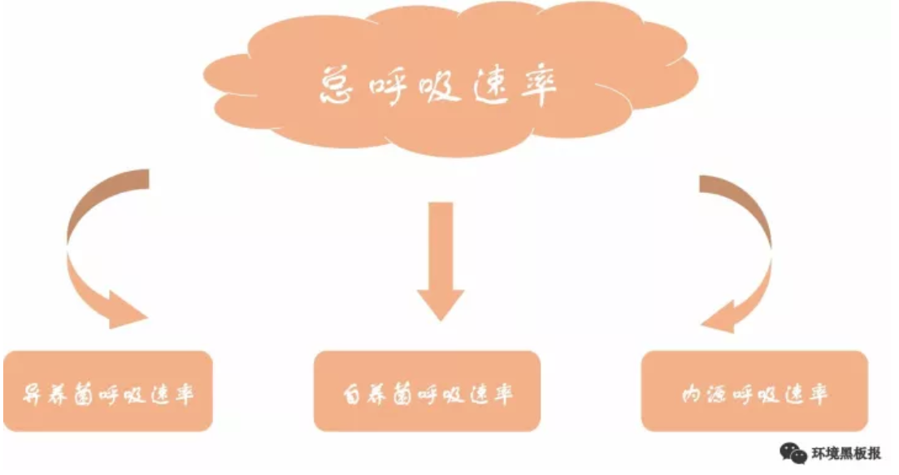
4.1.2 OUR应用的理论介绍
上面介绍了呼吸图谱的组成，下面来谈一谈呼吸图谱的作用。为了更清楚的起到对比，我们需要在污水处理厂正常运行时，刻苦用心的你日常闲来无事多测测好氧池OUR，建立一个污水处理厂的OUR数据库，对正常情况下的OUR烂熟于心，只有这样你才能了解你自己一亩三分地的情况。
通常，活性污泥OUR值的大小及其变化趋势可对好氧池负荷的变化情况起到预警作用，同时OUR的变化也间接反映出活性污泥自身的健康情况。我们分两类情况进行分析：
4.1.2.1 OUR异常高于正常值的情况
如果OUR若大大高于正常值，表示活性污泥需要消耗大量的溶解氧，表明优秀的活性污泥小伙子们正在撸起袖子加油干，这也往往预示着污泥负荷过高，可能超过污水处理厂的处理能力，这时出水水质可能超标。
你可以脑补一下这个场景：一个房间里面有十个饥饿的小伙子，你拿来十个馒头，他们能以迅雷不及掩耳盗铃响叮当之势把这十个馒头干掉，可如果你拿来一千个馒头，就算是吃到怀疑人生也吃不完。
4.1.2.2 OUR异常低于正常值的情况
如果OUR长期低于正常值，表示活性污泥消耗的溶解氧较少。这就需要分两种情况来分析了，一种情况是活性污泥精神抖擞，战斗力强，污染物负荷较小，污染物降解好，出水水质好；另外一种情况就是污泥活性差，污泥本身对污染物的降解性能不良，这可导致出水水质不达标。
第一种场景是这样的：一个房间里面有十个饥饿的小伙子，你就给五个馒头，估计最后盘子都会被吃掉；
第二种情况是这样的：同样是这个房间，同样是五个馒头，但是吃馒头的人变成了十个胃口欠佳的病人，结果可想而知。
4.1.3 OUR应用的实战演练
上面对OUR应用的理论介绍还是比较笼统的，下面详细讲解一下如何利用OUR来判断出水水质，针对OUR的应用进行实战演练。
4.1.3.1 实战场景1
用心的你费了九牛二虎之力测定了好氧池的OUR，发现OUR值比较低，根据理论分析，你记住了OUR异常低于正常值的第一种分析情况，认为活性污泥小伙子们战斗力强，降解能力个顶个，赶紧跟领导汇报说出水达标没有问题。你刚汇报完，厂里就通知你出水超标了，这脸被打的啪啪响。
这时,你一定会问，OUR值低，说明出水水质好，怎么出水还超标了呢。少年不要急，听我慢慢说来。
在OUR值比较低的情况下出水超标，说明此时的活性污泥并没有正常工作，那该如何解决呢？这种情况下你只需要往装置内部补充足够的碳源，最常见的是投加乙酸钠，看看投加碳源后的OUR值变化，如果OUR值还是很低，说明你的活性污泥活性差，大多都是老弱病残，再怎么给他们喂食碳源也不能发挥他们的作用；如果OUR值在投加碳源后明显升高，说明你的活性污泥是健康的，他们只不过是饿了，需要饱食一顿接着好好干活。
因此，在好氧池OUR值比较低的情况下，判断出水是否达标的时候，需要结合好氧池当下的OUR和投加完碳源后的OUR进行判断，才能准确对污水处理厂的运行状态进行评价。
4.1.3.2 实战场景2
勤快的你这天又测定了好氧池OUR，发现OUR值很高，结合OUR异常高于正常值的情况分析，你下结论说出水水质达标。
少年你又要被打脸了。
好氧池当下OUR值高，说明好氧池中污染物负荷高，表明好氧池需要消耗大量的溶解氧，为了保证出水达标，你需要做一系列应对措施，比如增加曝气，减少排泥量等等，只有这样才能保证你的出水达标。
4.1.3.3 实战场景3
就是这么巧，你们公司属于水处理界佼佼者，你一亩三分地里面管辖着若干个污水处理厂，你也坚持着建立了各个污水处理厂OUR的数据库，你也是一个闲着无聊喜欢翻数据的人。有一天，你发现针对不同污水处理厂，即使在进水和出水水质相差不大的情况下，好氧池的OUR差别仍然很大，这时你又迷茫了。
不要迷茫少年，因为在测量OUR时并没有考虑污泥浓度的因素，污泥浓度高的，表明污泥中活性微生物较多，OUR值较高，污泥浓度低的，表明活性微生物少，OUR自然就低一些。你可以想象一下，10个人和100个人的体重还是有很大差别的。
那如何采用一个统一的评价指标来评价呢？我们在污水处理厂的运营维护过程中，善于发现问题的同时，还要善于解决问题。这时，我们引入一个叫比呼吸速率（OUR/MLSS）的评价指标，你就会发现在入水水质和出水水质相差不大时，各个水厂的比呼吸速率相差也不是很大，是不是完美的解决了你的困惑呢？
4.1.4 SV30的应用实战
上面给大家讲了比较高大上的OUR，接下来再给大家讲讲污泥沉降比的实战应用。SV30，在污水处理界的地位，犹如《天龙八部》中的扫地僧。可谓是量筒在手，天下我有。
做过污水处理的人应该都知道，污泥30min沉降性能，可以一定程度上说明污泥的性状，所谓画虎画皮难画骨，具体判断污泥处在哪个状态却不是一件容易的事。可能或许也许maybe只有真正达到扫地僧的级别才能通过SV30一眼识别出污泥的性状来。
少年也不必灰心，鄙人在藏经阁翻阅典籍无数，浏览宝典若干，给大家总结了一些关于SV30的要点。大家理论联系实际，在测试SV30的时候，通过实际观察并结合我提供给大家的要点，相信大家早晚能达到扫地僧的级别。
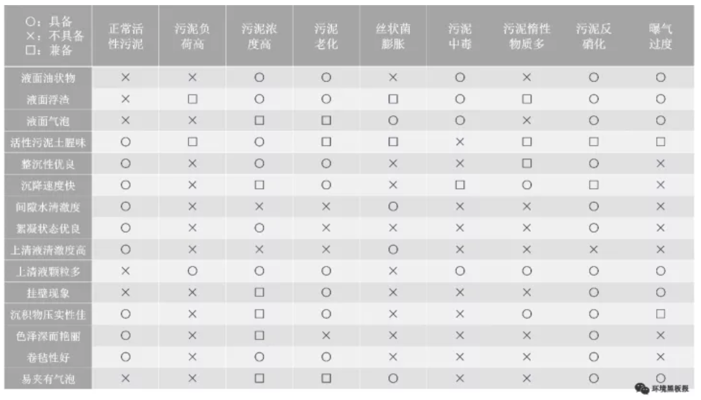
这里告诉大家一个小诀窍，千万别告诉其他人。
在测试SV30的过程中，重点观察前5min的沉降效果，活性污泥沉降实验的前5min往往可以完成沉降过程的80%，此阶段的沉降效果好坏往往可以指导对活性污泥性能的判断。
你可千万别取完样定个时间，先睡他半小时。所谓武功再高也怕菜刀，在测SV30的时候量筒的选择很重要，建议大家选用1L的量筒，量筒过小可能会发生污泥挂壁现象影响效果。再次重申，这些小诀窍千万别告诉其他人哟。
4.1.5 结语
以上算是给大家介绍了关于污水处理的两个秘籍，
一个是修炼较困难的葵花宝典——OUR，
一个是老少皆宜的太极拳——SV30。
所谓难易结合才能事半功倍。当然，掌握了以上两个技能也不能洋洋自得，天下之大，无奇不有，只有不断充实自我，才能屹立在污水处理行业的尖端。
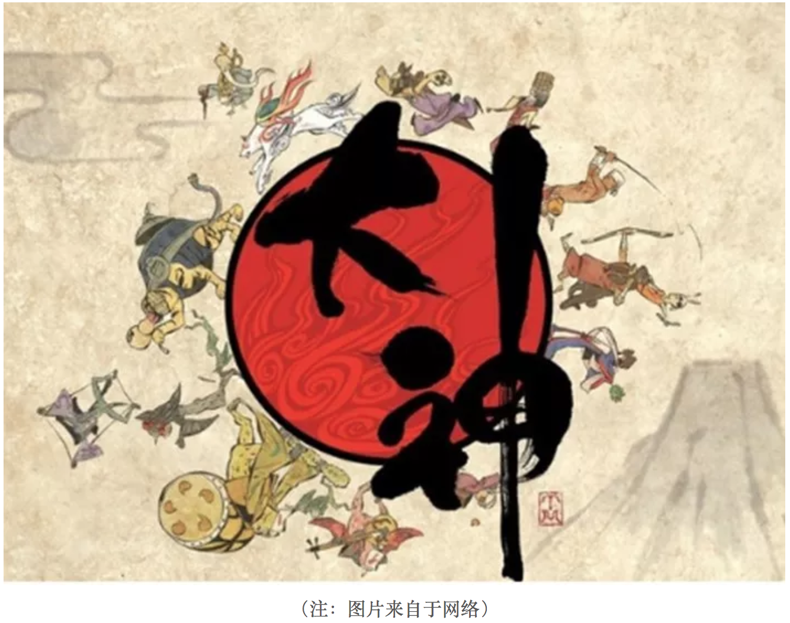
作为一个21世纪的污水厂操作人员，作为一个生活在大数据、物联网、云计算时代的污水厂操作人员，作为一个人工智能正在逐渐取代你饭碗的污水操作人员，仅仅依靠设计规范上面的知识已经难以追上时代的列车了。只有与时俱进，汲取新知识，用知识的力量将命运牢牢把握在自己手里。
成神的道路注定是孤寂乏味的，成神的道路注定是披荆斩棘的，成神的道路注定是一往无前的。少年，抓住当下，紧跟大师步伐，成神指日可待。
作者：阿布呆 校稿：看透， yufree 编辑：智公子 美图：丫头晚安，智公子
4.2 污师私房菜系列二: SRT的应用
4.2.1 引言
相信在理工科子民们数百万脑细胞中存储着这句话的只言片语，“在化学反应前后,参加反应的各物质的质量总和等于反应后生成的各物质的质量总和。”（如果没有，可能当初你的化学是语文老师教的）。看到这句话的瞬间，大家会嘴角上扬，自信的微微一笑“质量守恒定律嘛！！”恭喜你答对了。这时看过污师私房菜系列一的食客（没看过的客官，课后请自行补上），一定会疑问这个污水处理怎么扯到质量守恒定律了呢？客官莫要急，听我慢慢说来。
我们知道人作为一个有机体，每天通过摄入食物（想要远离油腻的同学需要注意控制摄入量）来维持机体正常运转，同时我们还需要排出一些物体（毕竟我们离神兽貔貅还差好几条长安街的距离）来保持机体的健康。污水处理厂运转机制跟人身体的运转机制相差不大。污水处理厂每天也需要摄入食物（COD、氨氮等污染物）为维持活性污泥的正常生长，同时污水处理厂每天也需要排出一部分污泥来保持水厂的健康运行。今天通过对SRT的介绍，让你轻松搞定污水厂的排泄问题。
4.2.2 SRT的含义
SRT （solids retention time）英文翻译叫固体停留时间，业界称为污泥龄。其定义为：微生物从其生成到排出系统的平均停留时间，也就是反应系统内的微生物全部更新一次所需的时间，单位是天。
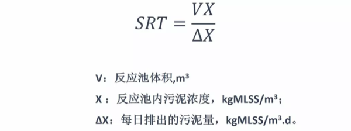
微生物从呱呱坠地，到撸起袖子干活也是需要时间的，菌到中年虽然有些油腻，但是战斗力还是不容忽视的，你不等微生物成熟就排出了系统，会损失战斗力。在污水处理系统中有两类主导微生物：异养微生物和自养微生物。异养微生物从小吃香喝辣，小身体长很快就过渡到油腻的中年；而自养微生物从小自力更生，相比异养微生物，小身体长的比较慢，异养菌都繁衍好几代了，这边可能刚刚成家立业。于是乎就出现了社会矛盾，异养菌抱怨社会老龄化严重，需要排出部分老龄群体；而自养菌抱怨婴儿太多，能干活的少，希望可以给他们更多的时间去成长。如果不解决异养菌的问题，这些家伙就会自我解体，让你出水SS变高，COD也变高；同样，如果不解决自养菌的问题，这些家伙就会降低劳动强度，让你出水氨氮超标。因此，为了社会和谐，你这个污水厂主管就得玩的溜SRT，让双方都满意，让双方干劲十足。
4.2.3 SRT的应用
下面给大家分析一下不同SRT对出水污染物浓度的影响。利用某污水处理仿真软件，设定入水COD=300mg/L，氨氮=30mg/L，TP=3mg/L，工艺为 \(A^2O\)，好氧池溶解氧设定为2mg/L。根据调整排泥量得到不同的SRT。从图上可以看到随着SRT增加，出水COD、TP和SS增高，氨氮下降。SRT增长，异养菌老龄化就严重，过多的老龄化异养菌解体导致出水COD和SS增高。生物除磷主要通过厌氧释磷和好氧吸磷实现，关键在于剩余污泥的排放，你不排泥就是给自己找事情，磷当然会升高。相反，随着SRT的增长，自养微生物群落越来越健壮，一群油腻大叔干起活来也是基情满满。
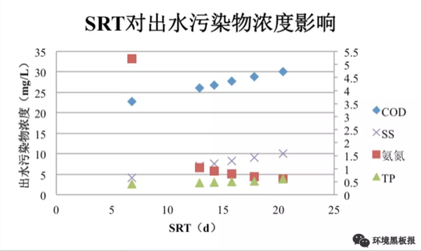
从SRT的计算公式可以看出，SRT长意味着系统中污泥浓度高，这个时候你好氧池的需氧量也是增高的，需氧量增高就意味着你需要供给更多的空气花更多的钱。这年头，钱进了腰包，谁也不愿意在让它出去，所以还是狠狠心多排排泥吧。在平均气温20℃左右的时候，将SRT控制在15d左右就足够了，当然如果你是一个负责人的运营人员，可以在此基础上不断进行调整，找到一个适合自己水厂的最佳SRT。
细心的客官可能发现我上面说到“在平均气温20℃左右的时候，将SRT控制在15d左右”（如果没发现说明你在搞事情哟）。不错对于严谨的我，是不会让你挑出任何毛病的。不同温度对SRT的要求是不同的，不信你看：好吧，我承认自己打脸了，对于吃香喝辣的异养微生物管你温度多少，只要有吃的就好。看来身体好，才是真的好。从图中可以看出，不同水温下，相同的SRT下出水COD基本没有变化；同样SRT增长，出水COD呈现增高趋势。任你温度变化，我自岿然不动，该解体还是要解体。
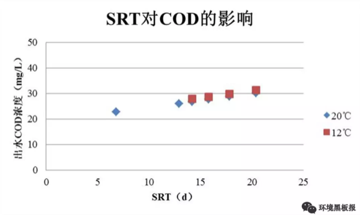
异养微生物这货不给我面子，自养微生物还是很给面子的，不同温度对SRT的要求是不同的，不信你看：哈哈，看到了吧，不同温度下，相同SRT下，出水氨氮相差很大。同样的14.2d的停留时间，20℃时出水氨氮可以达到0.9mg/L，而12℃时高达9.64mg/L（少年要注意了，此时你已经超标，环保执法人员已经上路）。对于身体羸弱的自养菌，大冬天不给增加点人手，干起活来没基情呀。虽然有社会矛盾，但是我们要抓住主要矛盾才行，因此，在冬季水温较低的情况下，我们要适当增加SRT，保证自养微生物的处理效果。
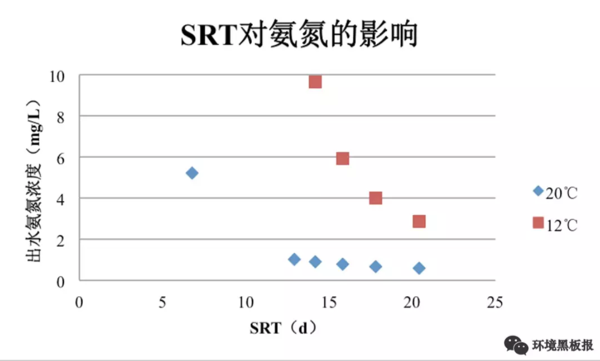
4.2.4 剩余污泥的控制
目前，控制剩余污泥排放量的常用方法有三种：污泥浓度（MLSS）控制、污泥负荷控制和SRT控制。因为污泥负荷、SRT与出水水质直接相关，用MLSS控制排泥对系统运行意义不大。实际运行中多采用二沉池排泥，这样可以减少污泥排放体积，节约费用。虽说MLSS控制排泥对系统运行意义不大，将MLSS与SRT充分结合起来可以更加方便对排泥的控制。对于那些兢兢业业工作的人员，领导安排说每天排泥半小时，真是风雨无阻坚持每天排泥半小时，结果运行了一段时间污水厂宕机了。这位员工也是很懵逼的，我也是按照指令操作，怎么就挂了呢？大兄弟不要桑心，我给你讲个故事听听：
话说有个农夫养了一只母鸡，农户好吃好喝的伺候着母鸡，母鸡也很给力的给农夫下了一堆鸡蛋，就这么着农夫的小篮子里面积攒了10个鸡蛋，然后母鸡每天都会给农夫下一个鸡蛋。农夫每天吃一个鸡蛋，母鸡每天也给他下一个鸡蛋。最近母鸡的伙食质量下降，母鸡下蛋激情受到了打击，2天才下一个鸡蛋，可农夫生活规律还是坚持一天吃一个，就这样吃着吃着发现没有鸡蛋可以吃了。农夫发现自己吃的太多了，就好几天没有吃，又重新积攒了10个鸡蛋。这次农夫改成2天吃一个鸡蛋，母鸡还是每天下一个蛋。就这样过了一段时间农夫积攒了好多鸡蛋，发现有些鸡蛋过了保质期坏掉了。
大兄弟这下明白了吧，领导让你干这件事，你按照命令执行没有问题，关键是你要考虑一下微生物们的感受，人家都入不敷出了，你还坚持往外排，不宕机都怪了。当然你也别走到另外一个极端，你不排泥，领导会拍你的。
4.2.5 结语
私房菜一里面介绍葵花宝典：OUR和太极：SV30。今天的SRT可以比作易筋经，习得该神功可以让你从一个无名小辈变成一个江湖数一数二的高手。俗话说，功夫再高也怕菜刀，SRT对应的菜刀就是自己建立的SRT数据库。练武讲究，冬练三九，夏练三伏，SRT数据库的建立也是一个道理。要坚持针对不同季节，不同来水负荷建立相应的SRT数据库，丰富自己的武器库。污水处理界没有对与错，只有适用与否。同样污水处理界的秘籍都是有着千丝万缕的联系，将一本秘籍练到炉火纯青的地步，也就可以窥探到其他秘籍的一二了。
作者：阿布呆 校稿：yufree、大石 编辑：智公子
4.3 污师私房菜系列三：AO工艺调试秘籍
想必学习环境工程专业的同学都会有这么一段经历：大四被学校安排去污水厂进行实习，大多数人实习期间都是在打牌喝酒，不要否认哟。你当时初来乍到，是否被污水厂神奇的处理工艺所折服？看着黑黝黝的水在厂里面逛了一圈就变成了清澈的水，当时一定为自己选择了这个专业而自豪。毕业后你进入了设计院，每天都在设计不同的处理工艺，画着不同的构筑物，心里暗自得意“用我设计的工艺，出水一定没问题”。这时, 如果有人问：如何将空空的构筑物变成正常运行的污水厂？想必你一定是一脸懵逼的…
今天就给大家讲讲如何将一个刚刚建好的污水厂变成一个可以正常运行的污水厂（行话叫调试）。所谓兵马未动粮草先行，调试前我们要做好一系列的准备，才能保证调试工作的顺利进行。
4.3.1 调试前置条件
土建构筑物全部施工完成，设备、电气、管道安装完成，管道打压、吹扫完成，配套水、电、气等生产条件具备启动调试，调试组织计划安排、调试方案制作完成，接种用污泥量、污泥来源、污泥投加方式等已确定。
4.3.2 物资准备
便携式DO仪、实验室化验相关设备、采样器、量筒(1L)、测温枪等。
当做好以上准备工作之后，我们就可以着手进行调试了，对于采用生化法处理污水的污水厂来说，调试的关键在于如何快速启动生化池。因此接下来我们将围绕生化池的调试进行介绍。
4.3.3 曝气器调试
曝气池正式进行污泥培养前，必须对曝气池内曝气器进行调试，以确保曝气器能够满足设计与运行的要求。
开始向曝气池中注入清水至曝气器的高度。确认所有的曝气器的水平度与水平面一致。如果曝气器水平度差大于10mm，调整曝气器高度到允许的偏差范围。继续向处理池中注水直至水面高出曝气器20cm左右。启动风机向曝气系统供气，开始时以低空气输送量输送空气，检查空气管道和曝气器连接处有无泄漏。如果空气管道发生泄漏或空气分配管和曝气器连接处有泄漏，将曝气池中的水排放到一定高度，以使泄漏点露出水面并进行修补。确保空气管道和曝气器连接处无泄漏后，重新向曝气池中注水至水面高出曝气器约20cm，开启风机对曝气器系统供气，检查整个曝气池的曝气效果，确保整个曝气池面曝气均匀，曝气器无损坏。
只有进行完曝气器调试后，方可向曝气池中注入污水，进行曝气池污泥接种与培养。
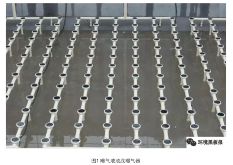
4.3.4 接种培养
接种培养就是将相近的污水处理厂回流污泥或脱水后的污泥通过水泵或直接倾倒入生化处理池，再经过一系列培菌步骤完成对整个生化系统的启动。采用接种法进行污泥培养时，主要工作步骤为接种→培养→驯化。
4.3.4.1 污泥接种
- 接种污泥的选择
采用良好的接种污泥可以大大缩短污泥培养驯化的时间。以下污泥可以作为接种污泥且按此顺序确定优先级：
同类污水厂的剩余活性污泥或脱水污泥；
城市污水厂的剩余污泥或脱水污泥；
其他不同类污水站的剩余污泥或脱水污泥；
河流或湖泊底部污泥；
粪便污泥上清液。
- 接种污泥的数量
在确定接种污泥的来源后，就要考虑接种污泥投加量的问题。一般情况下按照混合液污泥浓度3000-4000mg/L计算投加污泥量。在计算出理论需要量后，考虑到实际的污泥活性、运输过程中的损失、接种过程造成损失等因素，在理论计算值的基础上加上一个1.1-1.5的安全系数。
- 接种污泥投加方式
接种污泥的投加方式主要有泵送投加和直接投加，两种投加方式在投加过程中要确保多点投加和均匀投加，避免污泥堆积在一处。如若曝气池后接有MBR池，投加的活性污泥需要用格栅进行过滤，格栅间隙一般为1~5mm（具体数值咨询膜厂家）。
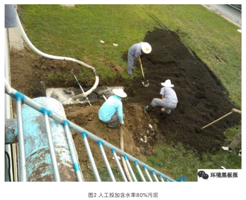
4.3.4.2 污泥培养
接种污泥投入到生化池以后，就进入培养阶段。培养阶段首选生活污水进行污泥培养，若现场没有生活污水，可采用自配营养液进行污泥培养。每天投加到生化池的COD量按混合后生化池COD质量浓度在300500mg/L水平计，氮和磷按照BOD：N：P=100：5：1折算。投加完营养液后进行闷曝，为了通过全程足量曝气达到激活活性污泥活性的目的，这个过程需要24h左右。控制要点是不进水而仅仅进行足量全程曝气，随后组织低水量营养液进入生化系统，并将曝气量降到能够保证整个生化池混合液DO值在13mg/L左右。当好氧池的出水COD降解率达到60%，混合液30分钟沉降比达到10%~30%时，认为培养成功。培养过程中可将二沉池中的污泥回流到缺氧池，并向缺氧池中投加营养盐，进行缺氧污泥的培养。
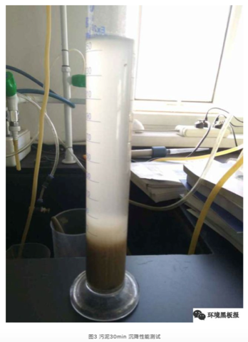
4.3.4.3 污泥驯化
当污泥培养成功后，即可进行污泥驯化阶段。驯化阶段将待处理废水提升进入A池，A池出水自流进入O池，控制提升泵水量约为设计水量的1/4，同时将曝气池混合液和二沉池的污泥回流到A池。持续运行一段时间后，观察出水水质情况，当沉淀池的出水较清澈，加大提升泵出水水量，每次增加10%~20%（以设计流量为基准），重复以上步骤，直至达到满负荷。满负荷运行水质能达标时，驯化阶段结束。进入试运行及稳定运行阶段。
4.3.5 调试注意事项
接种污泥时注意在反应池中先冲入一定量的污水，其体积要保证剩余空间可以容纳接种污泥。
培养阶段由于活性污泥数量少，基础差，繁殖基数少，所以耐受高曝气的冲击能力差，如果一直处于足量曝气的阶段，活性污泥被氧化分解的情况就会非常严重，以至于活性污泥繁殖的量抵不上被氧化分解的量。 所以，在培养阶段，闷曝过后一定要将曝气量降下来。
培养过程中，当出现较具规模的活性污泥浓度时，就需要进行适度的排泥，控制排泥量大小以排泥是否会导致生化系统活性污泥浓度降低为标准。
调试过程中保证曝气池溶解氧浓度在13mg/L，缺氧池溶解氧浓度在0.20.5mg/L，缺氧池ORP值在-50mV到-100mV左右。
驯化过程中，进水负荷要逐步提升，避免进水负荷的突然增加对系统造成负荷冲击。
调试期间确保进水、A池、O池pH值在6~9范围内，pH值过低（低于6）活性污泥池面有酸味，处理效率下降，原生动物活性减弱，pH值过高（高于9）出水混浊，处理效率下降，活性污泥有解体现象，原生动物 可见死亡解体。
在日常操作中保证系统水温在10~40℃之间，当水温偏低时，可以提高活性污泥浓度，以抵消活性污泥活性降低的负面影响，从而达到活性污泥在水温偏低时去除率增高的目的；相反地，当水温较高时，活性污泥活性旺盛，可以通过降低活性污泥浓度来规避出现未沉降絮体和混浊的上清液的不良情况。
通过排泥将曝气池中污泥浓度控制在设计值，排泥要少量多次，严禁一次性大量排泥。
每天取曝气池混合液进行SV30测定，确保SV30值在15%~30%左右。
定期对曝气池活性污泥进行SVI测定，确保SVI值在50~200之间，当SVI超过200时，可以判定活性污泥结构松散，有发生丝状菌膨胀或沉降性转差的迹象。当SVI低于50时，可以判定活性污泥出现污泥老化的可能性较大。
培养初期，由于进水负荷高，曝气池中会有大量白色泡沫，属于正常现场，可以通过洒水进行去除。
曝气池混合液回流量根据设计计算书要求进行调整，一般为100%~400%。
二沉池污泥回流比根据设计计算书要求进行调整，一般为50%~100%左右。
今天这道私房菜可能有些生硬，但绝对下饭。调试的过程即摸索运行参数及规律的过程，根据实际的情况进行参数的调整与优化，为以后的正常运行提供正确的操作方法、运行参数、维护及预防措施。调试的成功与否直接影响着整个污水厂能否正式投运。调试过程是一个理论知识与实际经验有机结合的过程，通过调试可以加深对理论知识的理解，同时可以用理论指导实践。对于刚刚踏入污水处理行业的新人，本人极力推荐大家深入现场，从调试开始，对未来的你收益无穷。
作者：阿布呆 校稿：周宁 编辑：李立平
4.4 污师私房菜系列四：浅析精确曝气技术
4.4.1 前言
目前城市污水处理较多采用活性污泥生物处理工艺，即通过微生物的新陈代谢作用，将污水中呈溶解、胶体状态的有机污染物分解、吸收或者吸附来实现水质的净化。
生物处理过程是个复杂的生物化学反应过程，通过曝气维持好氧环境是其中一个非常重要的环节。目前较多采用鼓风机曝气给微生物提供好氧环境，曝气量的控制决定着整个系统对废水的处理效果和污水处理厂能耗水平。曝气量较小时将会抑制系统中的硝化反应，同时还会引起曝气池中丝状菌繁殖，导致污泥膨胀；而曝气量较大时，不仅会增加运行费用，同时强烈的空气搅拌还会打碎污泥絮体从而影响出水水质。与此同时，如果处理工艺有硝化液回流时，过高的溶解氧也会影响反硝化效果。从一些国内的污水处理厂耗电量来看，曝气环节占据了总耗电量的50-70%，是污水处理厂能耗最大的部分之一。
为了实现按需供气和降低曝气能耗，人们提出了对曝气量进行精确控制的设想。随着污水处理厂在线监测仪表、相关设备性能和管理水平的提高，精确曝气控制已从理念成为现实（图1）。
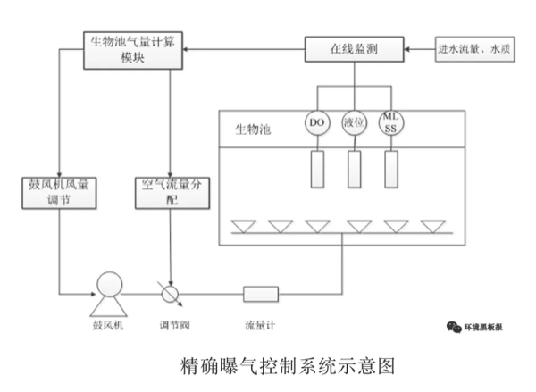
目前国内约有38座污水处理厂（总处理规模932万吨/d）安装使用精确曝气控制系统，从国内外研究和实际使用情况看，精确曝气控制系统能够降低10-30%曝气能耗（图2），经济效益可观。
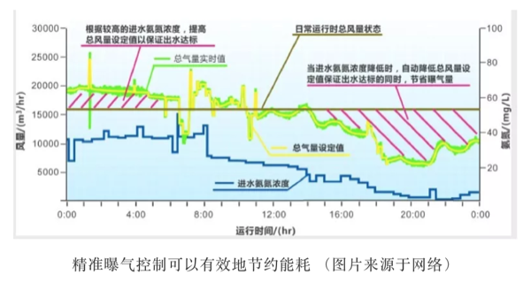
4.4.2 传统曝气控制
目前我国污水厂对曝气控制的精确程度较低，主要可以概括为以下几种形式：
通过开启/关闭鼓风机和手动调节阀门调节风量。这种控制阀方式简单、粗放，一般情况下只要出水指标不出现很大的波动，一般不会开/停风机或是调节空气阀门，进行恒气量曝气。当不得不调节曝气量时，操作人员就需要反复调试，很难较快达到理想状态。这种调节方式极易造成曝气能耗的浪费。
恒溶解氧控制。这种方式是通过对溶解氧的简单反馈来实现的，普遍采用溶解氧检测仪和电动调节阀作为简单的控制回路，当生化反应池内的溶解氧(DO)值大于某一个设定值时，关闭电动蝶阀，当DO值小于某一个设定值时打开电动阀门。然而，该控制方式具有一定的滞后性，并且对阀门的调节也很难在较短的时间内完成，调节过程中甚至可能出现阀门的反复跳动。这种方式抗负荷冲击也不理想，溶解氧波动程度也较大。
比例积分微分(PID) 定值调节。这种方式根据池中溶氧仪的DO反馈信号与DO设定值进行比较，将偏差通过PID运算后传给阀门的行程控制器调节阀门的开度，进而控制池内的DO值。然而，该控制方式有时间延迟，即从开始曝气到池内DO变化需要一段时间，造成溶解氧的控制波动很大，同时为了保证安全运行，系统的DO设定值只能保持在较高的数值上，保持了过大的余度而造成浪费。
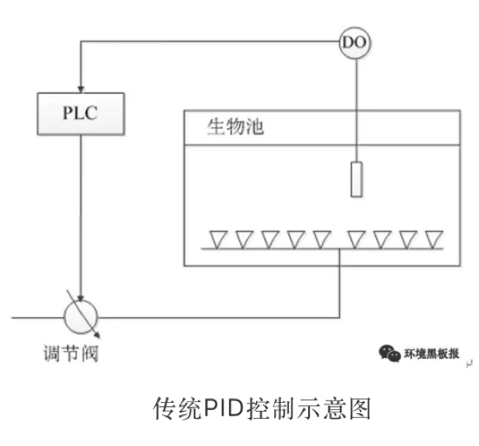
4.4.3 精确曝气控制及相关技术
所谓的精确曝气控制就是将在线仪表及阀门和鼓风机控制集成到一个智能化的控制系统中，通过动态优化与调整供气量，尽量做到按需供气，从而达到稳定污水厂出水水质和节能的目的。目前较为成熟的精确曝气控制技术主要有以下几类。
4.4.3.1 前馈+反馈+生物模型
这种控制方式是以国际水协的活性污泥模型为基础，根据污水厂历史数据和在线仪表检测到的水质水量的变化，预测曝气池所需要的曝气量，再结合曝气池中实际溶解氧、水温、混合液悬浮固体及水压等指标，来调节空气流量分配和鼓风机风量。该控制模式较为完美，但需要采集较多的指标，对仪表的性能稳定性有较高的要求，并且生物模型也难以非常准确地预测曝气池所需气量。该模型的代表控制系统是美尚生化科技公司的生物工艺智能控制系统（BIOSⅡ+BACS）和上海昊沧系统控制技术有限责任公司的AVS精确曝气流量控制系统。
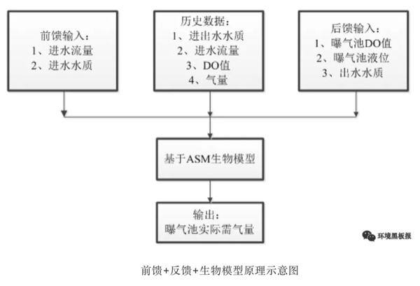
4.4.3.2 反馈调节+性能优越的硬件系统
该控制模式省去前馈和生物模型，解决了对在线仪表过多依赖和生物模型准确度问题。但该系统需要较高的对阀门和鼓风机的控制能力，即该系统要能在较短的时间内将阀门的开度和鼓风机的风量调整到能满足水质变化后曝气池所需的供气量和节能的目的。这种控制模式的代表控制系统是德国冰得公司的VACOMASS控制系统。
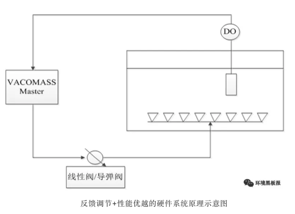
4.4.3.3 前馈调节+过程反馈+终端反馈
模型计算的控制方式风靡一时，好多污水厂引进计算模型，大多是对污水处理厂进行数学建模，将建模者认为的所有影响鼓风机风量的因子输入其中，如进水的水量、化学需氧量、氨氮、温度、pH、气压等。这些影响因子又基本上全部采用在线仪表测量。再根据一系列的理论公式或经验公式进行程序计算，得出某一时刻鼓风机应该输出的风量值。模型计算型的自控系统采用实时分析进水水质水量各项参数，根据一系列的理论公式得出某一时刻的工艺风量，这种控制方式的问题在于过分依赖在线仪表的准确性，经常会因为一台仪表的误差或故障而带来蝴蝶效应，导致整个计算过程与实际需求值大相径庭，同时由于实际上影响风量的因素极其复杂，如氧传递效率、曝气孔堵塞等不可测或不可控因素也会对风量产生影响。基于以上原因，天津创业环保集团开发了一种污水处理厂曝气总量的精确控制方法，引入自适应控制的理念，在风量的确定上反其道而行，即在采用进水水质水量参数作为基础的同时，又大幅度降低其权重作为风量调整预判的依据，而是根据风量作用后的效果来判断当前鼓风机的风量高或低，进而根据判断结果对风机进行固定的较小步幅的调整，使得风量不断趋于合理值。
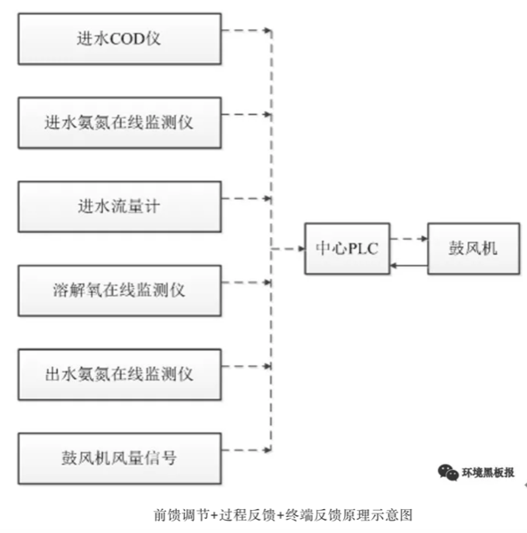
4.4.3.4 其他
采用串级PID控制方法来实现曝气流量控制。主调节器和副调节器串接工作，主调节器的输出是作为副调节器的给定值，由副调节器控制调节阀动作。溶解氧作为主调节参数，曝气流量是副调节参数，它是为了稳定主参数而引入的辅助参数。主调节器按照主参数与工艺给定值的偏差进行工作，其输出作为副调节器的给定值，主调节器在该系统中起主导作用。副调节器按照流量这一副参数与来自主调节器的给定值的偏差进行工作，其输出直接控制调节阀。采用模糊控制器来实现溶解氧控制。输入量为溶解氧给定值与测量值的偏差e以及偏差变化率ec，输出量为向曝气池送风的空气流量与调节前空气流量的比例系数u。控制过程为控制器定时采样溶解氧和溶解氧变化率，与给定值比较，得出溶解氧偏差e以及偏差变化率ec，并以此作为控制器的输入变量，经模糊控制器输出的比例系数，再乘以一个经验比例系数k，得到风量的减量（增量），从而改变风量使溶解氧保持稳定。
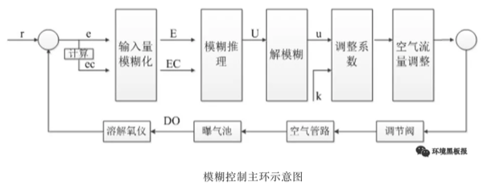
4.4.4 结论与建议
关于精确曝气的气量计算模型篇幅较多，也比较枯燥，这里不再详述，如有感兴趣的同行，可以后台留言交流。
而目前理论模型的缺陷比较多，关于异养微生物的很多动力学参数并不是在所有水厂都通用，化学计量参数更是特异性比较强。因此在模型应用时要能明确的划分适用区间，而参数的获得要以大的时间跨度数据为基础，这样获得的参数通用性会比较强。模型的简化与应用需要大量的数学理论计算，对建模者的数学能力要求较高。
精确曝气控制不仅仅只有通过活性污泥数学模型才能实现，模糊控制、人工神经网络、PI计算等都可以实现曝气控制。各种控制策略的优劣需要通过实验来进行比较判断。精确曝气系统需要高素质的运营维护，很多污水厂即使拥有硬件，但管理往往跟不上，也是导致精确曝气系统不能实现既定功能的重要原因。
基于以上分析，精确曝气系统的研发可以放开思路，不仅仅考虑利用活性污泥模型，根据具体项目的现场情况和人员素质配套相应的曝气控制系统。由于污水生物处理过程是多变量、非线性、大滞后的不确定系统，并不一定要建立完全的闭环自控系统，可根据工艺现状、设备自控支持程序、运行人员操作方便与否等综合考虑，能够通过简单易行的控制策略来协助运行人员合理调控运行模型，也不失为一种良好的节能降耗措施。
作者：阿布呆 校稿：广播站王站长 编辑：Lisa
4.5 污师私房菜系列五：原来你是这样的COD
4.5.1 污师眼中的COD
化学需氧量COD（Chemical Oxygen Demand）是以化学方法测量水样中需要被氧化的还原性物质的量。废水处理厂的进水、出水以及受污染的水中，能被强氧化剂氧化的物质的氧当量。想必学过化学的各位对COD这个概念都了然于胸，倒背如流。但你真正的了解COD吗？COD背后的故事你又知道多少？今天让我们一起揭开COD的面纱，认识一下真正的COD。
污水处理界一般将COD笼统的分为两类，即COD和BOD（Biochemical Oxygen Demand）。作为一名资深的污师如果你也这样认为，那只能说你too young too simple。在污师界首先将COD分为两大类即溶解性有机物和颗粒性有机物，然后再定义其可生物降解性能。一般而言，可生物降解性能分为三种情况：快速可生物降解、慢速可生物降解和不可生物降解。
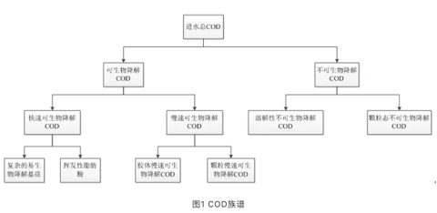
4.5.2 COD组分测试方法
当看到这个COD族谱的时候，大家大概会一脸懵逼吧。上学的时候老师只是教如何测出来总的COD，至于细分的组分老师可没教我们怎么去测。别急，既然敢把这个族谱抛出来，那么测试方法也会一并给大家的（我从来不做留图不留种子的事情）。
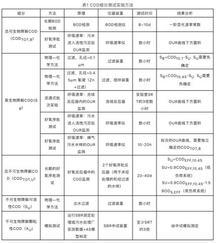
可能看到上面生僻晦涩的实验方法，你的头瞬间超过了大头儿子。如果按照上面的方法操作下来，一套COD族谱化验分析出来没一个月的时间是很难做出来的。不过不用担心，你的忧虑早已被我识破，为了节省大家的时间，给大家提供一个城市污水初沉池出水中有机组分所占总COD质量分数的典型取值范围供大家参考。
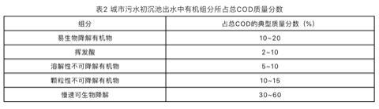
当然这个表格只是给出了一个典型的取值范围，具体污水厂的实际值还需要各位污师自己去测量。不要认为做这个分析化验是浪费时间，坚持做下去你会有意想不到的收获，至于这个收获是什么需要你自己去做了才知道。
4.5.3 COD组分作用
说了这么多关于COD族谱的事情，大家一定很纳闷把COD分析的这么透彻的作用是什么？对我们处理污水有哪些帮助？接下来给大家讲讲这个COD族谱的作用。
首先，COD组分分析是建立模型的必要步骤。活性污泥模型大家应该都有所耳闻，通过这个模型可以预测出水水质、调整运营策略、节能降耗等等，一句话，这是一个牛逼到不行的模型。很多小伙伴们很疑惑，这么牛的模型为啥实际应用这么少，因为这个模型的准确性很依赖对污水处理厂进水组分精准的分析。如果污水处理厂进水组分分析不到位，模型的预测精度就大打折扣。考虑到进水组分分析难度较大，很多水务公司或污水处理厂没有能力进行分析，导致了模型的应用推广受到了限制。
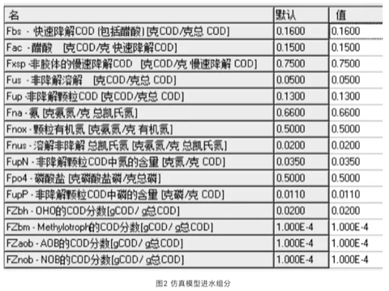
其次，COD组分分析是选择工艺或提标改造的关键参数。可以试想一下，如果入水COD溶解性不可降解部分占比50%，这种时候单单选择生化处理工艺是不能保证出水达标的，要结合高级氧化等工艺才能保证出水效果。对拟提标改造的水厂，首先分析现状出水COD组分，根据组分进行工艺选择做到有的放矢。例如出水颗粒性COD占比很高，可以选择混凝+过滤工艺；如果出水不可降解溶解性COD占比高，就要考虑高级氧化工艺了。
4.5.4 结语
COD族谱的作用远远不止以上两点，但相信上面两点就足以说明COD组分分析的重要性。理论基础决定上层高度，只有夯实基础，才能实现质的飞跃。各位污师们，快快拿出你们的瓶瓶罐罐加入到COD组分分析的行列中。重新认识COD，重新认识污水处理，以期共同在各自污水处理厂的运营工作中提质增效。
阿布呆
小生而立之前，混迹环保大千，功夫略有一二，希冀执剑天涯。污水乃吾所专，自控略知毛皮，愿结识各路好汉，共叙黑板佳话。
作者：阿布呆 校稿：看透 编辑：丫头晚安
4.6 污师私房菜六：地主家也没有余粮了。。。。
这几年国家环保力度越来越大，考虑到我国整体较为脆弱的环境承载能力，单单监控氨氮已不能满足要求，各地区污水厂总排口陆陆续续加装了总氮和总磷在线监测仪。自从总氮和总磷监测仪安装后，全国大部分污水厂进入烧钱时代（投加碳源和除磷药剂），这种持续的烧钱模式对于污水厂来说那是压力山大，套用电影的一句台词“地主家也没有余粮了”。
4.6.1 生物脱氮和除磷的基本原理回溯
在正式展开这个话题前，先给大家简单介绍一下微生物脱氮和除磷的基本原理（考虑到严谨性，厌氧氨氧化细菌这个异类暂时不在这里面）。污水中的总氮包括凯氏氮和硝酸盐氮，凯氏氮又包括有机氮和氨氮。污水厂采用活性污泥工艺，在溶解氧充足的环境中（溶解氧≥1.0mg/L），自养微生物亚硝酸菌和硝酸菌通过亚硝化和硝化反应将氨氮转化为硝酸盐氮，这个过程中微生物不需要外部碳源；接下来在缺氧的环境中（溶解氧≤0.3mg/L），异样微生物反硝化菌通过反硝化反应将硝酸盐氮还原成亚硝酸盐氮最后变成氮气，这货需要外部碳源才能完成这个反应（这就是烧钱的重点）。
生物除磷是一个比较复杂的过程。进水中的磷通常以溶解性正磷的形式存在，最终以不溶性聚磷富集在PAO（聚磷菌）体内。除磷的机理如下：厌氧释磷，好氧吸磷。在释放磷时，PAO消耗VFA（挥发性脂肪酸），在体内聚集PHA（聚羟基脂肪酸酯），而聚磷以溶解性正磷的形式释放。在吸磷时，PHA被消耗，溶解性正磷转化为聚磷。厌氧段VFA的存在及其数量的多少，关系到除磷成功与否。
4.6.2 总氮烧钱的基本套路
继续我们烧钱的话题，微生物作为活体生物也是要吃东西的，天天吃肉对身体不好，所以微生物的饮食也要合理搭配，保证营养丰富。一般污水中BOD：N：P的比例在100:5:1就能满足微生物的正常生长。为微生物提供充足的营养和稳定的环境是每个污水厂应尽的本职工作。由于饮食习惯的地区差异，工业废水水质的复杂性，导致我国部分地区污水水质特殊，入水碳氮比严重失衡。仅仅依靠入水中的BOD不能满足反硝化需求，因此需要补充碳源以保持反硝化反应的正常进行，从而保证出水达标。为了极尽所能的利用入水中的BOD，大牛们陆续开发了各种工艺，比如倒置A2O工艺、分段进水A2O工艺等等。上述工艺一定程度上增强了脱氮效果，然而入水组分的失衡单单靠这个还是不能解决，因此大家烧钱的日子正式开始了。目前主流烧钱方式有：投加甲醇、葡萄糖和乙酸钠。因甲醇购买需要备案，葡萄糖为固体需要人工配药等弊端，乙酸钠已逐步成为烧钱时代的王者。拿一个5万吨的生活污水厂举栗子，入水BOD为90mg/L，入水TN为50mg/L，排放标准TN为15mg/L，为了满足排放标准每天需要投加6.4t乙酸钠，乙酸钠按照一吨1200元计算，则投加碳源一天需要花费7680元，一年的费用为280万。这么一算，说它烧钱一点毛病也没有吧。
4.6.3 总磷烧钱的基本套路
上面给大家介绍了一下生物除磷的基本原理，你可能会说通过排泥就能解决问题了。理想很丰满，现实很骨感，现在各个区域都存在污泥处置难的问题，很多情况下好氧池的污泥只能在里面转呀转，就是不能外排，再加上微生物吸附磷也是有个极限的，内忧外患结合下，就只能借助化学除磷的手段了。目前化学除磷常用药剂为聚合氯化铝（PAC）、聚合氯化铁（PFC）、除磷剂等。同样拿一个5万吨的生活污水厂举栗子，入水总磷4mg/L，排放标准为0.5mg/L，微生物处理效率按照70%计算，为了满足排放标准每天需要投加2t聚合氯化铝，聚合氯化铝按照一吨2000元计算，则投加聚合氯化铝一天需要花费4000元，一年的费用为144万。这么一算，说它烧钱也一点毛病也没有吧。
4.6.4 加药方式本身也烧钱
所谓“人生百态，各有千秋”，污水厂投加碳源和除磷药剂的方式也是五花八门。有连续投加的、有脉冲投加的，有单点投加的、有多点投加的，具体效果怎么样，谁用谁知道。不论投加方式怎么样，目前对于投加量的控制都是通过经验值来把控，以人工调节投加量为主，或者有钱的主投加量基本不调整，就那么一直往里面加。人工调节的弊端在于不能及时响应入水波动带来的影响，有时候可能药剂过量投加浪费，有时候又可能投加不足导致出水超标。人工投加药剂的另一弊端是人工成本的增加，为了投加药剂需要专门配备1-2名工人进行药剂配置和调节投加量。现阶段中国劳动力成本越来越高，从国外公司开始转战越南、马来进行投资就可见一斑。传统的依靠人工投加药剂不仅造成了药剂浪费，同时越来越昂贵的人工成本也给水厂带来了极大的负担。
4.6.5 水厂是如何没有余粮的
污水处理厂作为污水排入水体的最后一条防守线，为祖国的蓝天碧水担负着终极守护责任。目前大多数水厂政府以BOT的形式交由企业运行，企业通过收取污水处理费来维持正常运转。水厂达标处理的水量乘以水价就构成了政府支付的水费。水费一般按照月结，也有季度结算或者半年结算的（水费实际的收取周期会严重滞后的）。水厂达标处理的水量通过水厂出水在线监测仪表和流量计进行统计，水厂的水价最开始由投资额来确定，然后在固定的周期内，政府会对水厂成本进行审计，根据审计结果重新对水价进行增减。随着我国水务行业愈发成熟，政府对于污水厂的运行模型也愈发清晰，水务企业再也不能像之前那样蒙混过关了（现在审计都会邀请专业的第三方公司进行）。基于国内大的投标背景，很多水务企业都是低价中标，导致水厂最开始运行时水价就比较低。新环保法的实施，越来越严格的环保督查，类四类排放标准的推广，人工成本的逐年升高，导致了水厂的运行成本年年攀升。水价低，成本高，审计严，留给水务企业的利润越来越低了，“地主家”的余粮越来越少了。当下水厂再也不能像之前那样进来的水什么样，出去的水也什么样（躺着赚钱）。随着水务行业越来越规范，环保压力越来越大，水务公司都在不惜余力的确保出水达标。作为企业首要目的还是要盈利，在满足环保需求的前提下，如何改变当下形式，是大家面临的共同困境。
4.6.6 污水处理厂自动化的一点思考
现在工业化已经进入4.0时代，污水厂也该升级换代迈入2.0时代，污水厂自动化是未来大势所趋，对于这种药剂精细投加的操作更应如此。鉴于生化反应的复杂性，利用机理模型的自动化控制可能还有一段路要走。其实，污水厂可借鉴工业控制器来实现精细化管理。PID控制器（PID控制器是一个在工业控制应用中常见的反馈回路部件，由比例单元P、积分单元I和微分单元D组成。PID控制的基础是比例控制，积分控制可消除稳态误差，但可能增加超调，微分控制可加快大惯性系统响应速度以减弱超调趋势。）作为最早实现化的控制器已有近百年历史，现在仍然是应用最广泛的工业控制器。污水厂应该将这种成熟产品引进，用以实现局部的自动化生产，解放劳动力，提升效率。PID控制器在污水厂中已有部分应用，比如溶解氧的控制、pH调节控制等。但我们要看到在水处理行业里面类似PID的自控手段还是凤毛麟角。现在大家对水务行业未来的定义是数字化、智慧化，这个阶段对应于工业3.0和4.0时代。为了实现这个宏伟目标，我们应该打好当下基础，尽快实现水务行业2.0时代。
当下环保形势愈趋严格，出水检测指标越来越多，污水厂需要投入更多的人力、物力来保证水质的达标，人力、物力的增加预示着企业成本的增加。如何在保证出水达标的基础上不断降低成本是当下企业共同的目标。对于自动化程度较低的污水行业来说，不断提高水厂自动化程度，实现精细化管控，是降低人工劳动强度，减少物力投入的有力助手。污水厂自动化不是一蹴而就的事情，可以分模块进行，例如精确曝气模块、智能加药除磷模块、智能碳源投加模块、智能内回流控制模块，通过各模块的实施，最后集成为一个大系统，实现全厂的联动，终极目标实现水厂的智慧运行，少人值守。
我国污水行业起步较晚，各项基础条件都很差，在当下大环境中，传统的以人工为主的运行模式以不能满足需求，将自动化应用于水厂中是烧钱时代省钱的一大利器。水厂管理人员也要打破思想壁垒，借鉴不同行业的优秀成果，集各家所长应用于水厂中，早日实现水务行业的飞跃。
阿布呆
小生而立之前，混迹环保大千，功夫略有一二，希冀执剑天涯。污水乃吾所专，自控略知毛皮，愿结识各路好汉，共叙黑板佳话。
作者：阿布呆 校稿：看透 编辑：竹而乐
4.7 污师私房菜七：我们都对氨氮做了什么
氮、磷等植物营养型污染物排入水体会造成藻类和其他微生物异常增殖，从而加速水富营养化过程。污水处理厂担负着整个城市的污水处理，其处理效果的好坏对水体的富营养化进程起着至关重要的的作用。从活性污泥问世至今，科研大拿们从来没有停止过对新技术、新工艺的探索，让我们一起来看看我们都对氨氮做了什么？
4.7.1 传统生物脱氮
- 硝化作用
化能自养微生物的生物氧化：CO2为主要或唯一碳源，以还原态无机化合物（NH4+、NO2-、H2S、S、H和Fe2+）的生物氧化获得能量和还原力[H]的微生物称为化能自养微生物。包括硝化细菌、硫细菌、铁细菌、氢细菌。NH3、亚硝酸等无机氮化物可以被某些化能自养细菌用作能源。其中亚硝化细菌将氨氮氧化为亚硝酸并获得能量，硝化细菌将亚硝酸氧化为硝酸并获得能量。这两类细菌往往伴生在一起，在它们的共同作用下将铵盐氧化成硝酸盐，避免亚硝酸积累所产生的毒害作用。这类细菌在自然界的氮素循环中也起着重要的作用（当然在污水处理的脱氮过程中也起着至关重要的作用），在自然界中分布非常广泛。
NH3、NO2-的氧化还原电势均比较高，以氧为电子受体进行氧化时产生的能量较少，而且进行合成代谢所需要的还原力需消耗ATP进行电子的逆呼吸链传递来产生，因此这类细菌生长缓慢，平均代时在10h以上（这就是去除氨氮时我们为什么需要保持长泥龄的原因）。
- 反硝化作用
反硝化作用也称硝酸盐呼吸。反硝化过程是一个涉及多种酶和多种中间产物并伴随着电子传递和能量产生的复杂生化反应过程。首先硝酸盐在硝酸盐还原酶的作用下，被还原成亚硝酸盐。该反应需要两个外源电子将硝酸盐中N5+还原为亚硝酸盐中N3+，同时脱下的一个O2-与细胞中水分解产生的2H+结合生成H2O。
第二步，亚硝酸盐在在亚硝酸盐还原酶的作用下被还原成NO，NO是反硝化过程中第一个气态中间产物，有剧毒。该反应需要一个电子将亚硝酸盐中N3+还N2+，同时脱下的一个O2-与细胞中水分解产生的2H+结合生成H2O。
第三步，在一氧化氮还原酶的作用下，NO被还原成N2O。该反应需要2e和2H+将NO还原成N2O和H2O。
第四步，在一氧化二氮还原酶的作用下，N2O被还原成N2。该反应需要2e用于N2O到N2的还原，生成自然界中氮的最稳定形式-氮气。
以上即为传统生物脱氮的全过程，传统生物脱氮工艺在污水脱氮过程中发挥着重要的作用，但传统生物脱氮工艺也存在着一些问题。抗冲击能力弱，高浓度氨氮和亚硝酸盐进水会抑制硝化菌生长；每氧化1gNH4+需消耗4.5g O2，增加了动力消耗和运行费用；系统为维持较高生物浓度及获得良好的脱氮效果，必须同时进行污泥回流和硝化液回流，增加了动力消耗及运行费用；对C/N比低的废水需要投入外加有机碳源，每克NO3-N反硝化为N2时需消耗3.5-4.5gCOD,增加了运行费用；为了实现高效的处理效果，有机物分解、硝化和反硝化分别在不同的系统中完成，运行控制难度较大。
4.7.2 新型生物脱氮
基于传统脱氮工艺的缺陷，各界科研大拿都积极投身于污水脱氮新工艺的研发中。微生物学家发现除了一些自养氨氧化菌和亚硝酸氧化菌外，一些异样菌也能及逆行硝化反应，并且在缺氧和好氧条件下均可进行；在厌氧氨氧化反应中，NH4可作为电子供体，NO2作为电子受体进行反应，从而生成氮气；在低DO下，氨氧化菌也可进行好氧自养反硝化反应。通过对这些脱氮生物反应机理的研究，出现了几种除氨氮的新工艺。
SHARON(single reactor for high ammonia removal over nitrite)即亚硝化脱氮工艺。基本原理是在同一个反应器内，在有氧的条件下，自养型亚硝酸菌将氨氮转为亚硝酸盐，然后在缺氧的条件下，异养型反硝化菌以有机物为电子供体，以亚硝酸盐为电子受体，将亚硝酸盐转为氮气。该工艺使用单个无需污泥停留的完全混合反应器实现，在较短的HRT和30-35℃的条件下，利用高温下硝酸菌活性比亚硝酸菌活性低，同时利用硝酸菌的水利停留时间大于亚硝酸菌，使水利停留时间介于两者之间，从而淘汰硝酸菌。该工艺与传统的脱氮工艺相比，可以节省25%的氧气，碳源节能40%，同时污泥产量少等优点。该工艺适合处理污泥硝化上清液和垃圾渗滤液等高氨氮高温废水。
ANAMMOX(anaerobic ammonium oxidation)即厌氧氨氧化工艺。在厌氧条件下，微生物以NH4+为电子供体，NO2-为电子受体，把NH4+、NO2-转化为N2的过程。
厌氧氨氧化过程中起作用的微生物是Anammox菌。Anammox菌是专性厌氧化学无机自养细菌，生长十分缓慢，厌氧氨氧化过程的生物产量很低，相应污泥产量也很低。厌氧氨氧化相对传统脱氮过程，氧需求降低62.5%，不需要外加碳源，大大降低了运行成本。
SHARON-ANAMMOX工艺即为SHARON和ANAMMOX的组合工艺。SHARON作为硝化反应器，在此反应器内，含NH4+的废水中约50%的NH4+被转化为NO2-；ANAMMOX作为反硝化反应器，含NH4+和NO2-的SHARON反应器的出水作为此反应器的进水，在此反应器内，厌氧条件下NH4+和NO2-被转化为N2和H2O。SHARON-ANAMMOX工艺中发挥作用的细菌主要为氨氧化菌和Anammox菌，两者均为自养型细菌，该工艺无需外加碳源，同时还可以节约氧气50%，污泥产量低，可以节约90%以上的运行成本。SHARON-ANAMMOX工艺主要适用于处理污泥上清液和高氨氮、低碳源工业废水。
OLAND工艺（Oxygen-Limited Autotrophic Nitrification Denitrification system）即氧限制自养硝化反硝化。该工艺的关键是在于活性污泥反应器中控制溶解氧，使硝化过程仅进行到NH4+氧化为NO2-。在溶解氧约为0.1~0.3mg/L的限氧条件下，好氧氨氧化菌将50%的NH4+转化为NO2-，使亚硝化阶段的出水比例稳定在NH4+/NO2-=1:1,从而为厌氧氨氧化阶段提供理想的进水，达到高效脱氮的目的。溶解氧浓度是硝化与反硝化过程中的重要因素，低溶解氧下亚硝酸菌增殖速率加快，补偿了由于低氧造成的代谢活动下降，使得整个硝化阶段中氨氧化未受到明显影响。其机理是由亚硝化细菌对亚硝酸盐氮催化进行歧化反应。
CANON工艺(completely autotrophic ammonium removal over nitrite)即全程自养脱氮工艺，该工艺在单个反应器或生物膜内，通过控制溶解氧浓度实现亚硝化和厌氧氨氧化，从而达到脱氮的目的。CANON工艺中微生物主要是亚硝化细菌和厌氧氨氧化细菌以及少量的硝化细菌。
4.7.3 结语
活性污泥法问世至今已有百余年，是当下污水处理的主流工艺。而今污水处理不再仅仅是保证出水达标，在能源日趋紧张的形势下，低成本、高效率、能源回收等已是污水处理行业面临新的挑战。从我们对氨氮的所作所为我们可以发现，我们从未停止过对新鲜事物的探索和求知。活性污泥法未来仍然会是污水处理的主流工艺，但彼时的活性污泥工艺已非当今的它，希望从事水处理的同仁可以与时俱进，莫要被疾驰的技术列车越落越远。
4.8 污师私房菜八：我所知道的污水除磷知识
磷作为一种营养物质，它是生物圈的重要元素之一。在水中可以有多种存在形式 (如正磷酸盐、偏磷酸盐、有机磷)，水中含磷量过高会引起水体富营养化问题。随着城市人口的增加、工农业的增长和污水排放总量的不断增加，以及各种含磷洗涤剂和化肥农药的大量使用，含有大量营养成分的污水流入湖泊等封闭性水域，加速了水域的富营养化。这种现象在世界各地，包括我国都不断发生着，给工农业、生活用水、水产业以及旅游业都带来了极大的危害。因此，除磷技术的研究和应用就具有重要的意义。
目前，污水除磷的方法有很多，常规使用较广的是化学沉淀法、物理吸附法、生物法和膜技术处理法等。
4.8.1 化学除磷方法
化学除磷的基本原理是通过投加化学试剂形成不溶性的磷酸盐沉淀物，然后通过固液分离将磷从污水中除去。固液分离可单独进行，也可以与初沉污泥和二沉污泥的排放相结合。按照工艺流程中化学试剂投加点的不同，磷酸盐沉淀工艺可以分成前置沉淀、协同沉淀和后置沉淀三种类型。前置沉淀的药剂投加点是原污水，形成的沉淀物与初沉污泥一起排出。协同沉淀的药剂投加点包括初沉出水、曝气池以及二沉池以前的其他点位，形成的沉淀物与剩余污泥一起排出。后置沉淀的药剂投加点在二级生物处理之后，形成的沉淀物通过另设的固液分离装置（澄清池或滤池）进行分离。
可用于化学除磷的金属盐有多种：包括铝盐（巯酸铝、铝酸钠）、钙盐和铁盐（三氯化铁、硫酸铁、硫酸亚铁和氧化亚铁）。化学法除磷，也可称为混凝沉淀除磷技术，污水中的磷酸盐能和絮凝药剂生成不溶性的沉淀物而被去除。
化学法的特点是磷的去除率髙，处理结果稳定，污泥在处理和处置过程中不会重新释放磷而造成二次污染，但污泥产量大。污水化学除磷需要一些相关设施.包括药剂的储存库房、药剂的溶解与投加系统、药剂加入装置控制系统、药剂混合与絮凝单元以及澄清池等部分。只有充分优化相关单元的操作条件，才能达到预期的化学除磷效果。
4.8.2 物理吸附法
物理吸附剂包括活性炭、生物质、金属氢氧化物、金属氧化物、水滑石、硅基介孔分子筛、黏土矿物等。
活性炭是最常见的吸附剂，由于其比表面积大，吸附孔道比例高，且对化学物质的吸附具有光谱性质。目前广泛被用于各种物质的吸附去除。作为除磷吸附剂，活性炭具有吸附速率快，批处理效果好，饱和浓度高等特性，作为水厂常规吸附除磷方法，效果比较明显。但活性炭一旦饱和，更换周期长，施工难度大，更换费用高，新建企业往往采用这种方法。
生物质主要指自然界中一切有生命的可以生长的有机物质。用于吸附工程的有机物质及其废弃物就是生物质吸附剂。生物质吸附剂具备以下优点：材料成本低、分布广;孔隙率高，表面积大;表层含有较多羟基，改性简单，与磷酸根离子反应的活性较高;在水中不溶解，易分离。近年来研究的生物质吸附剂有软体动物壳、蛋壳、甘蔗渣等。
金属氧化物具有表面积大、羟基团众多和选择吸附性高的优点。氧化铁吸附磷主要通过球面的静电吸附和球内络合的化学吸附。磁性氧化铁纳米粒子在磷的初始质量浓度为2-20mg/L、吸附剂投加质量浓度为0.6g/L、反应时间为24h时，得到磷最大吸附容量为5.03mg/g，但是这种吸附材料对外界pH变化敏感，在pH=11.1时，吸附容量则急剧下降到0.33mg/g。
相比其他除磷技术，吸附法除磷具有容量大、耗能少、污染小、去除快和可循环等优势，但其自身也存在许多不足之处：共存离子对改性活性炭除磷影响显著;生物质的吸附容量较小;pH的变化对金属氧化物吸附容量影响很大;几种特定的阴离子对硅基介孔分子筛影响较大;黏土矿物普遍存在吸附容量小的缺陷。
4.8.3 生物除磷
在厌氧/好氧条件下培养出的聚磷微生物，在经过厌氧段的释磷后，能够在好氧段超其生理需要的吸收磷，并将其以聚合磷的形式储存在体内，形成聚磷污泥，并最终通过污泥的排放达到从污水中除磷的目的。生物除磷工艺以A2O最为常见，也包含各种变种工艺。
- Ａ/Ｏ工艺
这是目前最为简单的一种生物除磷方法，原污水或初沉池出水与回流污泥在厌氧池中进行混合，这种工艺要求没有硝化反应。一般说来，当厌氧区和好氧区的水力停留时间分别为0.5-1h和1-3h时，便可获得较好的去除磷和去除有机物的效果。
- A2/O工艺
常见的A2/O工艺是在A/O工艺的基础上增设一个缺氧区，并使好氧区中的混合液回流至缺氧区，这样就使厌氧、缺氧、好氧三种不同的环境条件及不同功能的微生物菌群能有机配合协作，具有除磷脱氮的双重功能。此工艺具有抗冲击负荷能力强、水力停留时间长、运行稳定的特点，除磷率一般为70%-80%。
- UCT工艺
UCT工艺是把沉淀池回流污泥回流到缺氧区，然后再由缺氧区将混合液回流到厌氧区。由于在缺氧区中反硝化作用完全，缺氧区中的硝酸盐浓度非常低。混合液从缺氧区回流到厌氧区，则厌氧区中的硝酸盐浓度亦非常低，从而保证了厌氧区的理想厌氧条件。故UCT工艺是目前各国应用最广泛的生物除磷工艺。
- 弗斯特利普（Phostrip)除磷工艺
弗斯特利普（Phostrip)除磷工艺，又名侧流工艺， Phostrip工艺是把生物和化学除磷法结合起来的一种除磷工艺，该工艺中主流部分为常规的活性污泥曝气池，回流污泥的一部分（约为进水流量的10%-20%）被分流到专门的厌氧池，污泥在厌氧池中通常停留8-12h，聚磷菌在厌氧池中进行磷的释放。脱磷后的污泥回流到曝气池中继续吸磷。含磷上清液进入化学沉淀池，然后用石灰进行处理，沉淀去除磷，石灰剂量取决于废水的碱度。除磷过程在污泥回流路径上完成。Phostrip工艺的优点是，与单纯的化学除磷工艺相比，可大大减少药剂的投加量和化学污泥量，出水总磷浓度可低于1mg/L，而且不太受进水BOD浓度影响。
4.8.4 膜技术除磷方法
与其它除磷方法相比，微生物法具有独特的优势。但微生物法也存在着几个自身无法解决的问题，即：活性污泥沉降性、生化反应速率和剩余污泥的处置费用。对此，水处理专家将膜分离技术引入废水的生物处理系统中，开发了一种新型的水处理系统，即膜生物反应器（MBR）。它是膜组件与生物反应器相组合的一个生化反应系统。膜技术应用于废水生物处理，以膜组件替代二沉池，提高了泥水分离率。在此基础上又通过增大曝气池中活性污泥的浓度来提高反应速率，同时通过降低F/M的值减少污泥发生量，从而基本解决了上述问题。此外，膜分离技术相对于生物法的最大优势是能回收纯净的磷盐，这是生物法所不擅长的。
膜技术回收磷盐主要应用于特定的废水，可以回收有经济价值的纯净磷盐，如磷酸盐、次亚磷酸盐等。膜技术用于废水处理除磷主要是与生物法相组合，组成膜生物反应器。当今，膜生物反应器有许多种类，根据膜组件在膜生物反应器中所起的作用不同，可大致将膜生物反应器分为分离膜生物反应器、无泡曝气膜生物反应器和萃取膜生物反应器3种。分离膜生物反应器中的膜组件相当于传统生物处理系统中的二沉池。在此进行固液分离，截留的污泥回流至生物反应器，透过水外泄；无泡曝气膜生物反应器采用透气性膜，对生物反应器进行无泡供氧；萃取膜生物反应器是利用膜首先萃取工业废水中的优先污染活性污泥，并将活性污泥失效的有毒物质萃取掉，然后再对废水进行生化处理。对去除废水中的磷，通常采用分离膜生物反应器。
4.8.5 结语
目前污水处理厂目标不仅为悬浮物和COD的去除，还要求脱氮除磷。但由于除磷和脱氮之间在碳源、泥龄等方面存在着矛盾，而且硝酸盐的存在对生物除磷工艺有一定的影响，生物除磷和生物脱氮很难同时达到最佳的效果。由于脱氮一般只能靠生物去除，而除磷工艺既可以采用生物除磷，也可以采用化学除磷。因此可以在优先保证脱氮效果的前提下，辅助以化学除磷，使得出水中的TN和TP同时达到要求。在城镇污水处理升级改造中投加足够量的化学除磷药剂情况下出水均可满足国家《城镇污水处理厂污染物排放标准》一级A标准要求。但在生物除磷和化学除磷联合作用下，化学药剂对活性污泥生物活性的影响值得进一步研究。
作者：阿布呆 编辑：竹而乐
4.9 城市之殇
4.9.1 序言
2012年7月21日，一场61年一遇的大暴雨让北京成为“汪洋水城”，想不到有生之年居然可以在帝都这个缺水的城市同时实现了“山盟海誓”。无独有偶，不仅北京遭遇了这样的窘境与困惑，其他城市诸如南京、武汉、广州、杭州等也先后开启了“看海模式”，这种“城市之殇”已经成为近年来城市发展挥之不去的阴影。
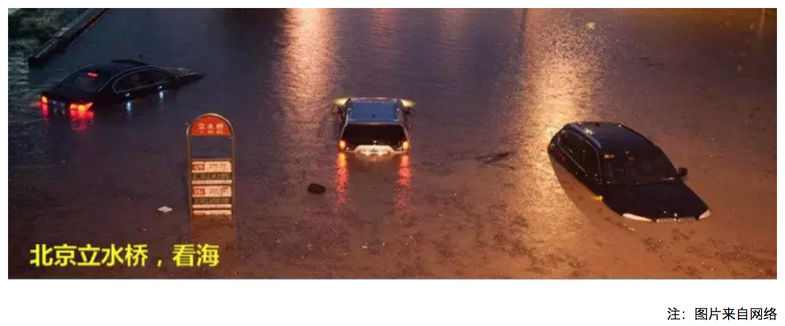
那么，为什么我们城市的排水能力一遇到暴雨甚至中小雨就原形毕露？这就有必要来聊一聊本期的话题：“海绵体”。海绵体，顾名思义，是一种对蓄水的形容，自然界原本是一个巨大的海绵体，而如今城市的爆发式发展建设已严重破坏了自然的海绵体，损害了自然的水循环系统。传统的城市建设模式根本不具备应对超标雨水的能力，那么必然会导致“逢雨必涝”，同时还会带来水环境污染、水资源紧缺、水安全缺乏保障等问题。
2013年12月12日，习近平总书记在《中央城镇化工作会议》的讲话中强调：“提升城市排水系统时要优先考虑把有限的雨水留下来，优先考虑更多利用自然力量排水，建设自然存积、自然渗透、自然净化的海绵城市”。海绵城市顺应时代号召应“运”而生。
4.9.2 海绵城市是什么
海绵城市的理念其实在我国古代早已践行，比如故宫的排水系统、云南的“哈尼梯田”模式、赣州的“福寿沟”蓄排系统等，都算作是早前的雏形。若要刨根求底地问海绵城市是什么，海绵城市更多的是一种新型的城市发展模式。
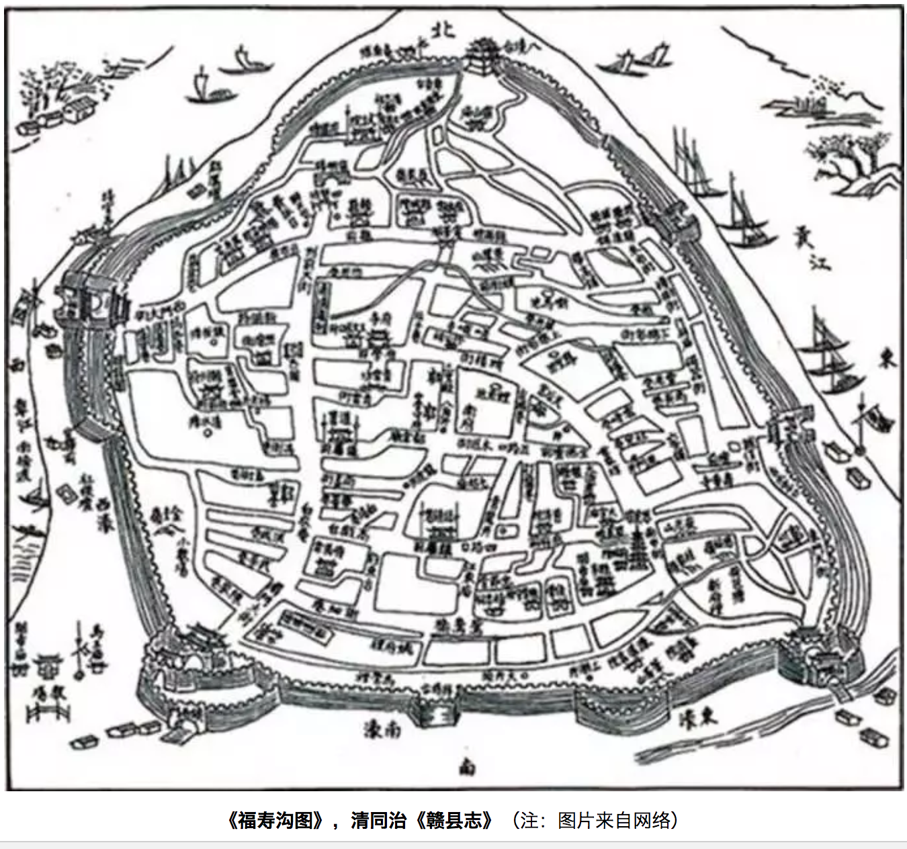
海绵城市的初衷是让城市能够像海绵一样，在适应环境变化和应对自然灾害等方面具有良好的“弹性”。简单来说，下雨的时候，城市可以像海绵一样吸水、蓄水、渗水，防止洪涝的出现；在雨水过后，干旱的时候，又可以将蓄存的水“释放”并加以利用。但同时，我们又希望这个“海绵”能发挥更大的作用，比如说还可以净化水体，让雨水在城市存积、渗透的同时得到净化，以利于进一步的雨水资源利用和生态环境保护。这就为海绵城市的设计、建设提出了更高的要求，不单是依靠恢复或构建自然途径来蓄水、存水，还应当结合人工措施来辅以完成水资源的净化、利用和排放。
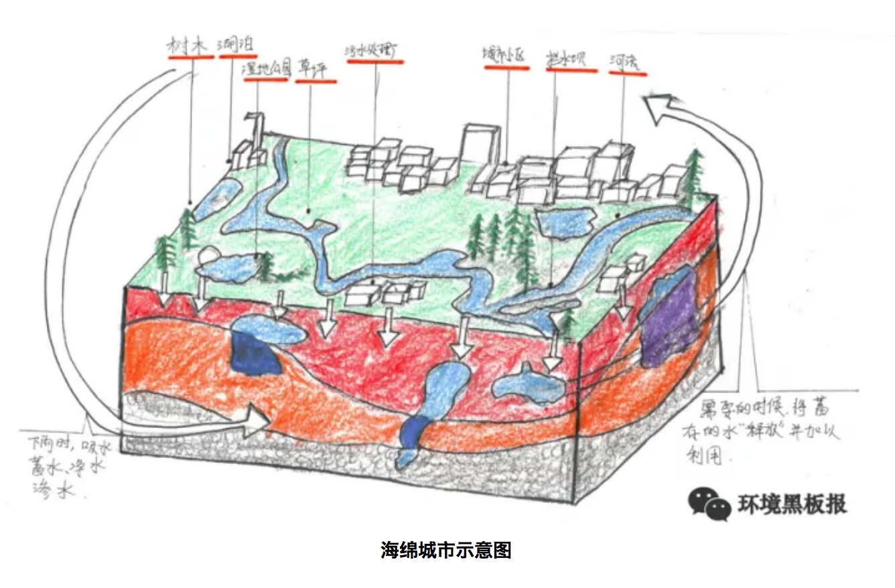
因此海绵城市的具体建设既不能“窄”，也不能“宽”。太窄就会回到植树造林搞绿化的老路子上去；太宽就会变成“海绵城市一个框，啥都可以往里装”。其实海绵城市建设还是要以目标与问题为导向，运用“源头、中途、末端”的措施，使绿色设施与灰色措施相结合，才能实现真正的目标。
简明地讲，源头主要以低影响开发设施（LID）为主，包括植草沟、雨水花园、生物滞留设施等，中途主要包括：雨水廊道、管网、沟渠等，末端主要包括：湿地、调蓄塘、调蓄池、水系等。
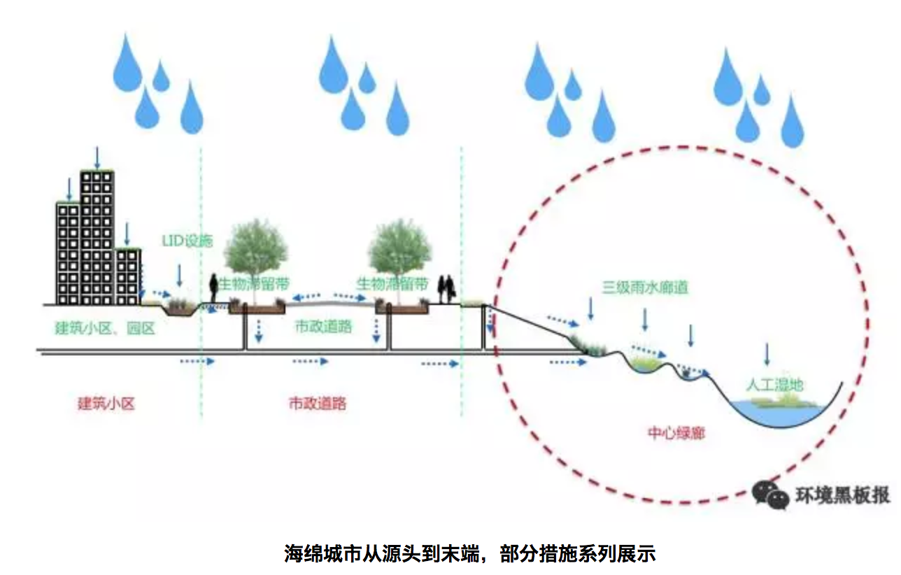
4.9.3 海绵城市试点
海绵城市的建设借助国家重视生态环境的东风，目前共执行了2个批次、30个城市的试点，试点期3年。期内国家将给予直辖市每年6亿专项补助，省会城市每年5亿，其他城市每年4亿元。
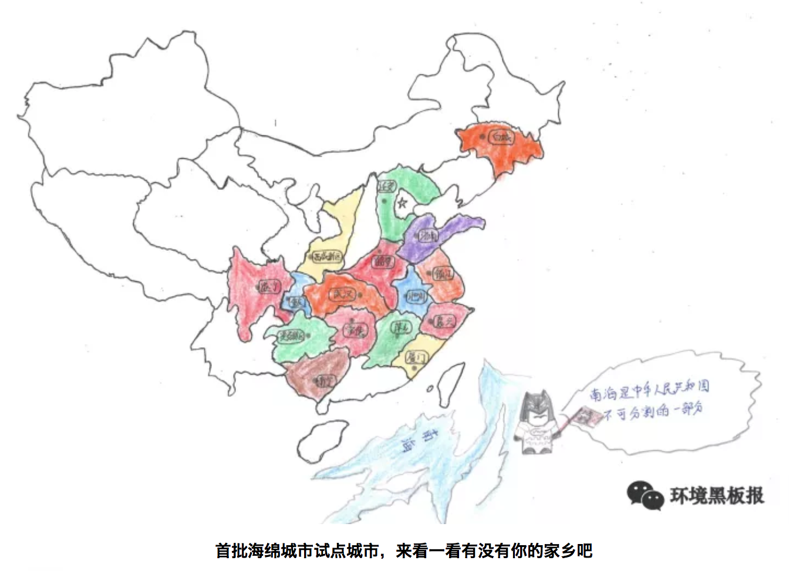
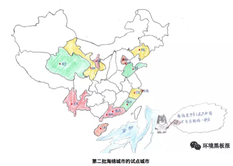
目前来看，海绵城市建设还没有一个全国性的“统一标准”，主要是因为我国地域差异大，东西南北中，面临的问题与挑战各不相同。比如北方地区多为缺水的寒带地区，南方地区则更容易发生内涝，西部地区多属于湿陷性黄土地区，也极度缺水。因此不同区域的海绵城市建设也应因地制宜。
4.9.4 浅谈海绵感悟
笔者从2015年开始从事海绵城市建设方面的工作，先后参与了多地的海绵城市试点建设的咨询、设计等工作，主要涉及海绵城市建设系统方案编制等方面。这里跟大家分享一下三年多来笔者对海绵城市建设的一些想法与感悟，希望能对现在或将来参与到海绵城市建设中的同仁们有所帮助。
4.9.4.1 从管理部门的角度
如果您是一位相关部门的负责人，笔者虽人微言轻，但也愿意提供一些思考供您参考。 海绵城市的建设是一个很复杂、庞大、时间跨度也大的系统工程。而且里面涉及到很多学科和部门，简单数数就需要规划、市政、园林、水利、道路等专业；住建、水利、园林、环保等部门来互相配合。因此如何统筹规划，通力协作，避免形成各自为政、“九龙治水”的局面，是一门很深的学问。
同时，很多城市现在都有新、老城区，新城区建设制约少、阻力小，一旦方案设计得当，大可一马平川。但是老城区就不一样了，不仅居民多、遗留矛盾和问题多多，牵一发而动全身，搞不好容易激化矛盾。这个时候，就不能只顾海绵城市建设的目标，还要考虑经济承受能力、轻重缓急、资金利用效率、建设时序、社会影响等方面。 千万、千万不能不分轻重地全面开工建设和盲目翻挖。最好可以以解决城市内涝、雨水利用、黑臭治理为突破口，结合棚户区和城乡危房改造、老旧小区有机更新等工作同步推进。
4.9.4.2 从项目公司负责人的角度
当前海绵城市的建设基本上都以项目打包的形式交由PPP公司全权负责建设。如果您是一位项目公司的负责人，首先恭喜您拿下了海绵城市的项目，但是接着愁人的事情来了。在很多项目管理过程中，一些PPP公司“当家不做主”，没有自主权，项目的管控不是由PPP公司独立操作，而会受到相关部门的干预，导致指挥不合理的局面。因此，如果您能在项目开展前和相关部门做好充分的沟通，对您后续工作的开展会有很大帮助。 同时，虽然目前海绵城市都处在建设之中，但是即使这样，试点期也已经过了2-3年，后期的运营维护也该做一些考虑了。如果您公司还没有做这方面的准备，那可千万要小心了，现在环境追责可是很严重的哦。
4.9.4.3 从设计师的角度
如果您是一名规划师或者设计师，请一定要“迈开腿，管好嘴”。一定要多去现场，没有调查就没有发言权，不能板凳一坐就站不起身，嘴皮一碰就出方案。曾经有一位设计院的设计师理直气壮地反驳说没必要去现场看这么细，走了个过场回来，后来设计的时候全部依靠业主来提供信息作为依据。结果可想而知，做出来的设计方案根本经不起推敲，漏洞百出，更别说拿去指导施工建设。
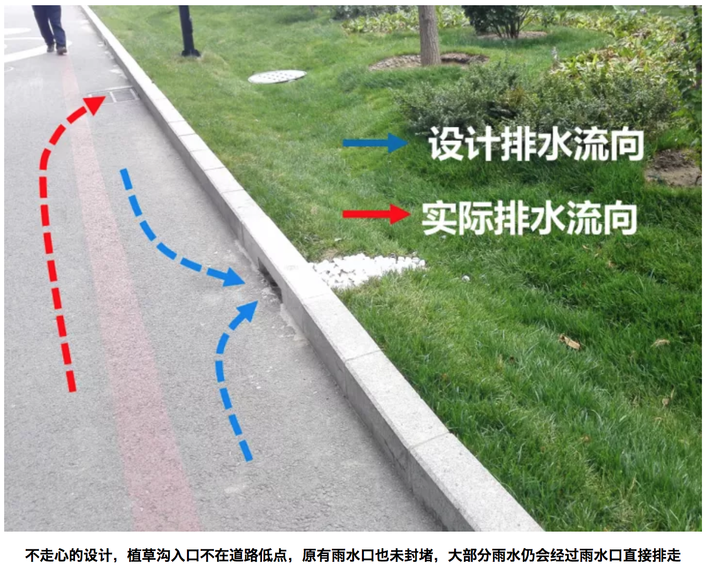
同时也提醒大家，海绵城市建设不只是“搞种植、搞绿化”。“花花草草”固然重要，但我们也不能天天搞“拈花惹草”的老一套。海绵城市的实质应该是绿色设施（雨水花园，植草沟，下凹式绿地等）与灰色设施（管网，泵站，调蓄池等）相结合，让它们在不同时间与空间上起到相应的功能与作用。
4.9.5 结语
海绵城市的概念一经提出，就在全国迅速地铺展开来。国内新事物的出现，不像国外“自下而上”的推进模式，而是“自上而下”的运动式推动。然而，没有前期多年的研究数据作为支撑，直接开展工程实践难免会面临各种各样的困境。 目前，“海绵城市”的提法基本已家喻户晓，无人不谈“海绵”；然而能真正潜下心来认真对海绵城市进行系统的研究与梳理的人却少之又少。一个新的领域，往往需要十年甚至更长的时间来形成系统性的理论与技术体系，之后才有可能更高效、更全面指导工程实践。希望各位海绵同仁，我们一起潜心努力，为这个领域尽自己的绵薄之力。
作者：王宇 校稿：广播站王站长 编辑：栟 手绘美图：丫头晚安
4.10 浪潮下的海绵城市
简介：海绵城市已在全国范围内掀起建设的大热潮。但各城市在推进海绵城市建设过程中，仍然面临着很多的疑惑、困扰和问题，随之直接影响到城市的建设效果、推进效率及试点经验总结。
4.10.1 海绵城市建设热潮
随着我国城镇化的快速发展，现有传统的排水模式已经不能满足当前的城市基础设施发展需求，并对水环境造成严重的影响与危害。近年来，城市水体黑臭、洪涝灾害等“城市病”越发受到关注。城市当前严重的面源污染、原有良性水文循环的破坏、健康水体生态环境的日益恶化等状况与国家生态文明建设的要求、新时代城市发展的建设要求、城市生态环境质量改善需求、人民群众满意感获得严重不符。
近年来，国家层面已高度重视城市发展过程中的雨洪管理问题，尤其是在2014年10月，发布了《海绵城市建设技术指南——低影响开发雨水系统构建（试行）》，同年12月，住建部、水利部、财政部三部委联合发布海绵城市试点申报通知，2015年3月，确定南宁、武汉等16个城市作为首批海绵城市试点。2016年4月，确定北京、上海等14个城市作为第二批海绵城市试点。要求每个试点城市3年内完成不小于15km2的示范区建设，目前的情况是，第一批试点建设期基本完毕，第二批处于试点建设期末。
2015年10月，国务院发布《关于推进海绵城市建设的指导意见》，要求到2020年城市建成区20%以上的面积达到目标要求；到2030年，城市建成区80%以上的面积达到目标要求。目前，全国范围内海绵城市建设的工作正如火如荼。
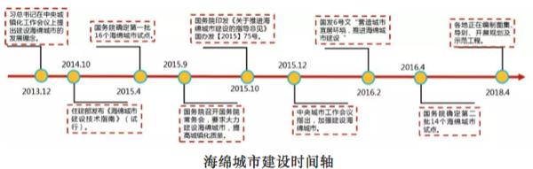
然而，在实际的操作与落实过程中，面临很多的难题与困难，主要包括观念的转变、理论与技术体系的建立、规范与标准的制定、管理模式创新、不同专业的协同合作、政策与资金保障、监测模拟评估等方面。从国内对海绵城市建设理念的普遍理解、知识技术体系的建立、实际工程经验的积累及管理机制体制建设等方面来看，要在短短几年内大规模地推动海绵城市建设，肯定会面临艰巨的挑战。
所以说，在当前政府大力支持、大量资金投入建设的背景下，仍然需要理性思考海绵城市的建设，只有全面地、系统地、完整地梳理海绵城市建设，才能高效有序地推进海绵城市建设，避免出现“一股风”、“一阵热”的现象。
4.10.2 海绵城市建设疑惑与困难
4.10.2.1 海绵城市内涵认识不清
目前，从很多试点城市的实施方案、三年实施计划、设计方案、落地工程项目等情况来看，对海绵城市的内涵与外延、年径流总量控制率、径流总量、径流峰值、径流污染控制等概念定义认识不清。
国务院办公厅《关于推进海绵城市建设的指导意见》明确指出：“海绵城市是指通过加强城市规划建设管理，充分发挥建筑、道路和绿地、水系等生态系统对雨水的吸纳、蓄渗和缓释作用，有效控制雨水径流，实现自然积存、自然渗透、自然净化的城市发展方式。”海绵城市是新时代城市转型的新理念新方式，不是某一个具体工程，不存在什么海绵项目或海绵工程的说法，应该是落实海绵城市理念的工程，所以说没有海绵城市工程，只有落实海绵城市理念的工程。
而且，海绵城市不等同于国外提倡的低影响开发（Low Impact Development），更不等同于透水砖、蓄水池等。海绵城市是为了解决实际问题产生，而不是为了增加项目与工程。
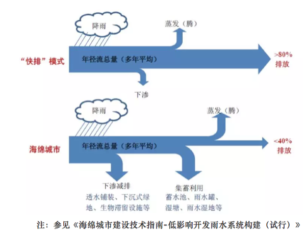
狭义上的低影响开发措施的功能和适用范围被过分夸大。一方面，有人认为海绵城市是一个框，啥都可以往里装，错误理解低影响开发是万能的，完全否定灰色基础设施，当前城市区域条件错综复杂，高效、可持续的解决方案基本无法仅仅依赖单一的绿色或者灰色的基础设施，若一味追求绿色雨水基础设施，往往会增加施工难度，造成投资浪费，无法解决实际问题。另一方面，有些人认为海绵城市是无用的，这种完全依赖灰色基础设施已经暴露很多现实问题，不符合海绵城市建设理念。
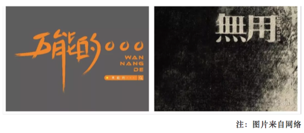
4.10.2.2 对控制目标、指标理解片面化
当前很多人对海绵城市的目标理解片面化，有人认为海绵城市建设是内涝治理，有人认为海绵城市就是黑臭水体治理，有人认为既没有内涝也没有黑臭水体的城市不需要海绵城市……海绵城市建设的六字箴言“渗、滞、蓄、净、用、排”，准确表达了海绵城市建设的多目标、多方向、多途径，其核心目标为径流总量、径流峰值、径流污染、资源回用，终极目标为：修复城市水生态、改善城市水环境、保障城市水安全、提高城市水资源承载能力
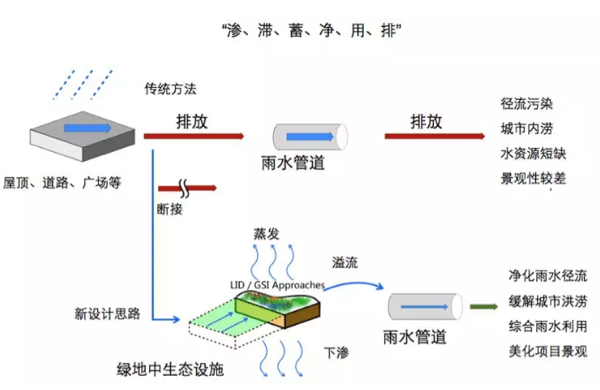
其次，对年径流总量控制率的理解不准，这个概念是降雨控制率，不是径流控制率，是一个水质控制标准，是海绵城市重要的指标，但不是唯一指标。目前从一些试点城市实施过程来看看，存在不结合实际情况，强行分配控制率指标，造成项目实施起来缺乏合理性，甚至有些方案编制单位将六字箴言割裂开来，分别进行项目分配，这样造成严重的后果，明显就是不了解各个低影响开发设施具有多功能性，而且某一个项目肯定是有多个子设施构成。所以说，在实际工作中，要根据不同条件，根据不同措施的特征、适用性进行优化组合，选择最优组合。
4.10.2.3 海绵城市建设艰难性认识不足
试点城市申报成功后，往往涉及到众多的实施项目，一方面，时间短，仅仅剩下不到三年的时间，完成几十甚至上百个项目，难度可想而知；另一方面，示范区域一般都包括老城区和新城区，对于老城区，绿地率很低，绿色空间不足，而且还面临着协调、黑臭水体、内涝积水点整治等问题，对于新城区，绿地率相对较高，空间较大，主要面临着居民反对与抵触，甚至不断投诉等，所以说数百个的改造、新建项目同时规划设计、同时施工任务相当艰巨。
总体的来说，不管旧城还是新城的海绵城市建设，均不同程度地面临这样或者那样的问题，面对这些问题，只有科学合理制定实施方案、实施计划、多方紧密协同配合等才能更高效、有序地推进海绵城市建设。
4.10.2.4 监测平台与模型模拟用途不清
随着海绵城市建设工作推进，各个城市至少试点城市都要建立海绵城市监测平台及构建模型，一夜之间相关监测设备“风生水起”，疯狂之后冷静思考，不能为监测而监测，平台构建的监测部分不是买设备，而是买数据服务。正确的是，首先要非常明确海绵城市建设监测的目的，这样搭建的平台与模型才更有意义，总结下来，监测目的主要有以下四个方面：（1）后续长期运营效果评估；（2）用与相关海绵设施（绿色设施）的科学追踪研究；（3）用于政府管理调度，通过不断调整优化模型，用来实施反馈；（4）用于未来城市规划管理。
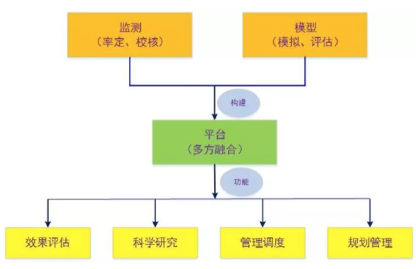
其次，监测平台建设是个比较复杂的系统工程，不求开始尽善尽美，但求不断完善，不可能一蹴而就，需要分布实施：第一步是监测，梳理清楚基本参数，展示出效果；第二步是整合监测、模型等；第三步，是结合相关城市的海绵城市专项规划、系统化方案与运营管理，真正能用于辅助方案的制定和后续的审批管理，做到多规合一、提高审批效率。
4.10.2.5 后期运营维护准备不充分
当前，在海绵城市建设过程中，国家也正在积极倡导与支持鼓励按照PPP（Private-Public-Partnership）模式进行操作，PPP模式主要由当地政府与企业共同参与投资建设、运行管理。海绵城市建设的PPP模式不应该企业或政府简单的融资渠道，更不应成为地方政府转嫁财政负担的途径，政府本身就有很强的融资能力，PPP模式是应以提高效率为初衷。
试点期已经过2~3年，后期运营维护是当前项目公司面临很棘手的问题，部分PPP公司甚至根本没有做好思想准备，有些根本不知道怎么去运营维护，项目一旦建设完工通过验收后，后期的管理基本上无人问津。
PPP公司需认识到不是建设完就拍屁股走人，还有很长时间的运营维护期。只有做好了以下三点，才算是一个好的PPP项目：第一，全生命周期，从设计、建设、运维的全生命周期，PPP合同至少15年以上必须要运营期；第二，让专业的人来干专业的事，政府是破解政策上的风险，做协调性的工作，政府不能压给社会资本，也不能社会资本什么都不管，都抛给政府，只想挣钱；第三，政府花钱是买效果，绝对不是买工程，一定落实绩效考核、按效付费。若PPP做不到以上，那就是变相的BT模式（“建设–移交”），有些PPP公司在建设上把99%的钱都赚走，只剩下1%的钱去做后期的运维，很容易造成后期服务不到位或效果没保障，那就失去PPP模式的“初心”。所以说，PPP项目应该是全生命周期的，让专业人干专业的事，政府花钱买效果，按效付费。
4.10.3 海绵城市建设展望
“不忘初心，方得始终”。海绵城市试点建设取得成功的关键在于是否实现了建设海绵城市的初心。找到海绵城市建设的初心，就是明确海绵城市建设的目的。海绵城市建设是城市发展方式的重要理念转变，是系统解决城市水问题的重要抓手，是要求改善城市生态环境质量、提升城市综合抗灾减灾能力、扩大优质生态产品的供给，让人民群众不断有获得感、幸福感。
从长期来看，我国城市的传统建设模式必然向海绵城市建设的模式转变。无论是工程界、学术界还是管理者都已经清晰认识到原有的粗放型的城市雨水排放模式问题百出。这一转变绝非一蹴而就，是一个长期而艰巨的系统工程。
海绵城市建设是今后城市理性、健康发展必须长期坚持的生态发展理念，在建设过程中要找准方向，精准施策，通过试点先行，保持久久为功。
作者：宇哥 校稿：广播站王站长，柴胡半夏苏 编辑：竹而乐
4.11 浅谈海绵城市试点项目建设现状及后海绵时代展望
截至目前，国家一、二批海绵城市试点考核结束，通过对试点建设工作梳理，均在顶层设计、组织管理、制度建设、工程建设、技术研发、典型案例等方面积累了宝贵经验与地方治理特色，为其他同类似地区与城市提供了可参考的建设模式经验、技术支撑。但短短三年试点时间，根本无法完全彻底解决城市所有的“城市病”，城市市域范围内仍然面临着合流制污染、洪与涝关系以及后期海绵资产效能保持等问题，在后海绵时代都亟需通过标准规范调整优化、补充完善基础设施短板、协调洪与涝关系、监测智慧化、精细专业高效的运营维护等方式实现海绵城市建设的长效保障。
4.11.1 体制机制建设完善
海绵城市试点项目建设过程中，各试点城市将海绵城市建设工作纳入政府报告，并依次依法启动立法程序，纳入国家法律法规中。同时将海绵城市要求纳入城市总体规划及控制性详细规划等法定约定规划，要求全面推进海绵城市建设。
各试点城市均建立以建设管理规定为领的“全渗透”配套机制体系，从管理机制、项目前期管理、规划设计管理、施工管理、竣工验收、运营维护全过程建立配套的规章制度，同时明确海绵城市建设主要工作及部门工作职责，落实蓝绿线、生态区域保护区，建立两证一书、技术审查、施工巡查等机制，将海绵城市理念渗透到每一个建设管理环节，形成全生命周期过程管理机制体制，为其他城市管理提供一定的参考依据。
4.11.2 城市水系统逐步改善
海绵城市试点前，不同城市面临着不同的水问题，集中表现为水少、水涝或水脏，甚至多种问题同时并发现象，严重干扰影响到城市居民的正常生产、生活。随着海绵城市试点建设推进，各试点城市通过实施一系列工程项目，有效缓解甚至解决了原来困扰城市已久的顽疾，积累了很多水环境治理的实施经验，不仅提高了城市居民的满意感与幸福感，而且为相同类似地区提供一定的参考经验。
4.11.3 投融资模式创新
在海绵城市建设过程中，大多数城市建设均采用PPP（Private-Public-Partnership）模式进行操作，PPP模式主要由当地政府与企业共同参与投资建设、运行管理。主要优势有：
（1）项目整体打包可降低项目的融资成本；
（2）明确全生命周期的长期投资成本与收益，形成稳健的城市运营资产；
（3）专业人做专业事，可提供一套水系统综合管理的专业服务；
（4）通过市场化采购，扩展筛选范围，加强竞争力。
所以说海绵城市建设的PPP模式不是企业或政府简单的融资渠道，更不应成为地方政府转嫁财政负担的途径，政府本身就有很强的融资能力，PPP模式是应以提高效率为初衷，通过试点探索，逐步形成新型的投融资模式，为高效推进海绵城市建设提供强有力资金支持。
4.11.4 合流制溢流污染控制需加强
随着城市居民对水环境的需求不断提升，以及国家层面对海绵城市建设、黑臭水体整治、排水系统提质增效等要求，城市既存合流制排水系统的政策法规、标准体系、控制目标及改造策略等都带来一系列问题与挑战，主要有以下几个方面：
（1）缺少相应的标准规范体系，无法有效指导实际治理工作；
（2）不同区域城市的排水网络发展不均衡，地区差异性较大；
（3）控制目标与实际改造策略缺乏统一一致性对应关系；
（4）地区条件不同，城市排水网络运行状态及要求不一样。
4.11.5 城市洪与涝管控要求不明确
随着城市开发建设，规模不断扩大，由于各种原因导致城市仍在不同程度地面临着洪与涝问题，洪涝管控要求仍然不明确，主要存在以下主要问题： （1）洪、涝关系较密切，但管理部门不统一，影响整体性治理效果； （2）城市缺少竖向规划要求； （3）原有老城区开发格局无法进行大规模调整，改造困难，现阶段缺少洪涝风险管控体系； （4）实际城市新建或改建过程中，缺少相应的标准规范指导，无大排水系统设计方法相关的详细说明。
4.11.6 监测评价体系有待优化
随着海绵城市建设工作推进，各个城市至少试点城市都要建立海绵城市监测体系，要非常明确海绵城市建设监测的目的，主要有以下四个方面： （1）后续长期运营效果评估； （2）用于相关海绵设施（绿色设施）的科学追踪研究； （3）用于政府管理调度，通过不断调整优化模型，用来实施反馈； （4）用于未来城市规划管理。
但结合不同城市目前监测情况来看，主要存在以下几个问题： （1）监测目的不清，缺少系统性考量，导致形成大量无效设备安装，造成投资浪费； （2）现场实际踏勘不充分，后期设备安装不顺利甚至无法安装，无法获得有效监测数据，实际指导意义不大； （3）后期设备维护不到位，部分设备安装基本无维护，数据有效性较低； （4）监测设备功能、应用范围不清、设备相关参数不清，安装人员与维护管理人员分离，设备出现故障等问题，不能及时维修及校正。
4.11.7 涉水资产运营维护体系有待加强
经过三年多的试点建设，在水资源、水安全、水环境、水生态等方面取得显著成效，海绵试点效果逐步显现，随之将分批次逐步进入到后期运维阶段，确保运维期有效运营维护是十分必要的。
从已出台的国家、项目公司层面的运营维护管理方案来看，方案多数集中单项设施层级的维护管理方法，运维管理对象单一，缺少整体性分析与诊断等，主要集中在： （1）只注重前期建设，忽略后期运维重要性，未对资产进行全面盘点，缺少建设后效果评价； （2）未对资产的重要程度进行梳理，缺少有效评估与设施分级，均采用统一标准开展有效运维； （3）缺少后期的运维标准，设施程度运维要求不明确，未实际考虑不同标准下运维管理费用，无法有效约束政府按效付费。
海绵城市试点结束后，不意味着海绵城市建设结束，不是终点，更应该是一个新的起点，结合我国试点建设后仍需要解决问题，后海绵时代仍然面临着以下关键重点工作需要推进完成：
4.11.8 相关标准规范面临挑战，需要进一步修订完善
我国现行的标准规范体系中，其中地表水《地表水环境质量标准（GB3838-2002）》中关于地表水等级评价标准缺乏科学有效的支撑依据，生物学和生态毒理学指标在实际工作中面临着众多挑战，实际操作起来落地性不强。此外《室外排水设计规范GB50014-2006（2016年）》中关于合流制溢流污染控制部分仅仅对合流水量计算、合流制管渠及附属构筑物（包括截流井、雨水调蓄池、雨水渗透设施等）设计等做出了一般性的要求，但在具体参数选取、复杂运行工况等方面仍然需要不断完善。
4.11.9 制定全市域流域管理计划，协调好洪与涝关系
试点结束后，近期来看，难以再对老城区进行大面积改造，政府如何充分组织发挥现有雨洪设施功能与作用，制定应急管理预案，补充完善关键重点设施，发挥协调组织调度能力，提前合理规划部署，是汛期有效应对洪涝风险与水质不达标风险的重要抓手。远期来看，政府加强统筹引领监管作用，制定全流域综合管理方案与实施计划，分阶段、分步骤、分重点有序开展建设工作。
考虑城市解决关键实际问题与需求，需充分统筹流域特征特点，编制城市全域实施方案及实施计划，并对突出及迫切解决问题提出近期实施重点与要求。
4.11.10 提升监测体系建设，发挥监测“眼睛”作用
对现有监测体系进行调整优化，补充完善监测“盲区”，实现监测数据长效运行，充分发挥监测“眼睛”功能，积累大数据，为设施规划与设计提供依据，优化工程及改造费用投入，提高工程及运行费用使用效率，定量化评估设施运行效果等。
4.11.11 加大基础设施底数摸排，实现运营资产智慧化
经过“厂-网-河”一体化项目建设后，水资源、水安全、水环境、水生态等方面得到显著提升。但由于项目建设体量大、实施周期短，再加上城市地下排水基础设施薄弱、维护不到位等因素，导致地下排水设施基础资料与实际情况差别较大，错接漏接等问题频频发生，原有排水管网与新建管网资料亟待排查和复核，因此结合地下排水基础设施排查情况，对地下排水设施资产进行梳理，完成地下基础设施资产梳理及数据化，为后续政府实施地下排水设施智慧化管理提供数据基础与支撑。
4.11.12 系统化、专业化、精细化运维方案，推进高效维护
建立不同等级的运维管理方案，系统决策并收缩重点项目。由于试点建设项目众多，按照统一标准运行维护，实现起来相对难度较大，依据项目及设施的重要程度，亟需建立不同等级的运维管理方案。
建立可供使用和参考的运维管理手册和标准化手册。通过对资产的梳理、录入、分级、评估，建立系统化运维管理实施方案，同时制定一套与实际运维相结合、落地性强的标准与手册。
建立资产管理信息平台、评估模型和跟踪监测机制。通过搭建资产管理平台，并定期更新录入资产数据，建立评估模型，结合监测数据，对运维整体效果进行评估，反馈运维管理情况并及时优化运维管理方案，形成一套完整的资产更新、监测、评估、反馈、优化的精细化管理模式。
作者：宇哥 校稿：看透 编辑：天枫
4.12 垃圾焚烧发电该怎么烧
垃圾焚烧发电是一项变废为宝的工艺，今天就让我们来看一看垃圾焚烧发电厂是如何工作的。
4.12.1 概述
为了让大家能直观地了解垃圾焚烧发电厂的工艺流程，我借了以下图片（来源于光大环保下属某垃圾焚烧发电厂的宣传卡通画）。虽然不同焚烧厂的规模、基本布置或工艺流程会有些许的差别，但个人认为差别不大，这幅卡通画完全能胜任科普的作用。
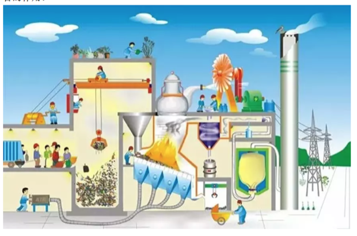
生活垃圾焚烧发电的主要原理是以生活垃圾作为燃料，放入锅炉中燃烧，将其产生的过热蒸汽输入汽轮机，实现由热能转化为电能的过程。整个工艺流程主要由垃圾接收输送系统、垃圾焚烧炉系统、余热回收系统、汽轮发电机及热力系统、烟气净化系统、灰渣处理系统、垃圾渗滤液处理系统等组成，因此，下面我们依照次此顺序向大家介绍垃圾焚烧发电工艺流程。
4.12.2 前端接收——垃圾接收输送系统
垃圾车由厂区的物流门进厂，经地磅称重后，车辆依照指示驶入垃圾卸料大厅，将垃圾倾倒入垃圾储坑。汽车通过后车斗将几吨至二十几吨不等的垃圾卸进垃圾储坑，按照要求垃圾储坑内的垃圾会停留7-10天，经发酵脱水后热值显著提升，可满足垃圾炉的焚烧要求。
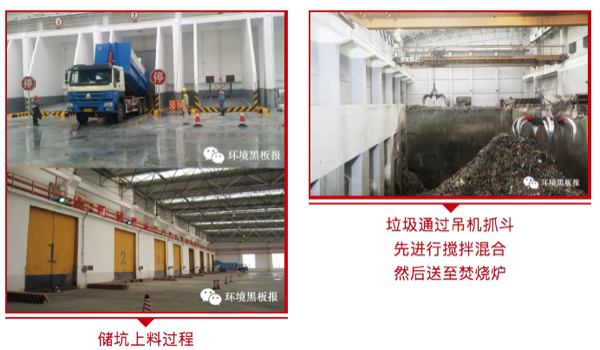
垃圾焚烧发电过程中，臭味气体的逸散对周围环境和操作工人的身体健康造成一定的影响，所以垃圾焚烧发电过程的防臭是一个困扰运营人员的难题。通常，工作人员会在垃圾储坑上部安装一次风机，垃圾储坑内的空气被一次风机抽至焚烧炉，使得臭气也进入炉中得以焚烧，转化成无臭气体，以控制臭味和甲烷气的积聚。另外，通过抽气等手段，使垃圾储坑保持负压，防止坑内的臭气外溢。
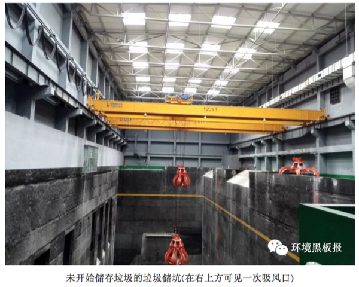
4.12.3 中端处理——垃圾焚烧系统
- 焚烧炉
目前国内外基本采用往复式炉排炉垃圾焚烧技术，垃圾抓斗将仓内垃圾提升到给料斗，通过给料槽连续不断加料到炉排入口。在推料器的作用下，垃圾首先进入排炉干燥区，通过炉排的动作，垃圾在炉排上往前移动到燃烧区，最后到达燃烬区，确保垃圾在850℃~1100℃高温下得到充分燃烧。
国内设计院会根据当地处理垃圾的热值，水分，成份等基础数据，选择合适的炉排形式进行选型。下面几张图片是垃圾炉排的一个基本的示意图（其中上面两张是炉排正在安装，下面两张则是安装完毕待运行的状态）。
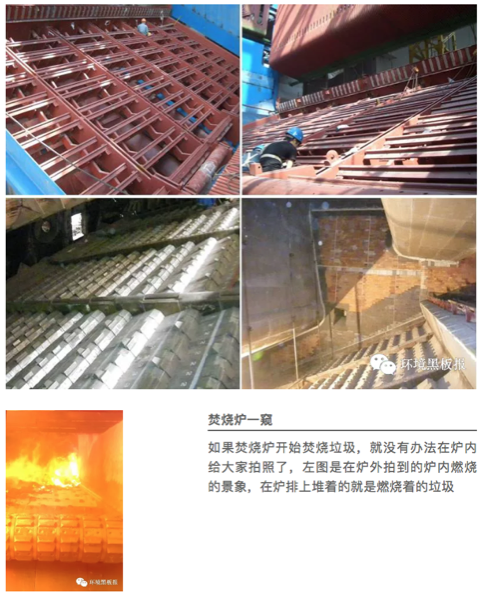
- 余热回收系统
焚烧炉的上部即为锅炉，焚烧炉出来的烟气温度约为850℃，首先被焚烧炉上部第一通道的水冷壁管吸收部分热量，然后烟气继续冲刷屏式受热面及过热器，烟气中大部分的热量在这里被吸收，最后经过省煤器时将剩余的热量再吸收一部分，尾气排至烟气净化系统（下图表示出烟气在锅炉内的流动，所经过的地方都是有换热管屏的，在右侧尾部的出口就接至烟气净化系统）。
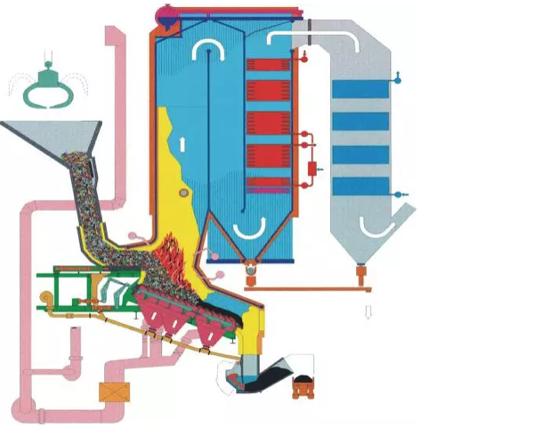
在烟气流动的同时，汽水也在流动，一般来说汽与水的流动和烟气的流动是逆向的，方便换热。一般来说，锅炉给水经除氧器由给水泵输送，经省煤器预热后送至锅筒，然后经水冷壁和屏式受热面进一步加热，产生出汽水混合物进入锅筒。饱和蒸汽在锅筒内被分离出来，经过过热器进一步加热，最后产生出过热蒸汽，送往汽轮机。
- 汽轮发电机及热力系统
焚烧炉产生的热能通过余热锅炉产生蒸汽，再经凝汽式汽轮发电机组转化成电能。汽轮机的原理就类似于卡通图中的水壶喷出的蒸汽吹动叶片，叶片切割磁感力线就会有电能产生，再由升压站送至大电网中供千家万户使用。
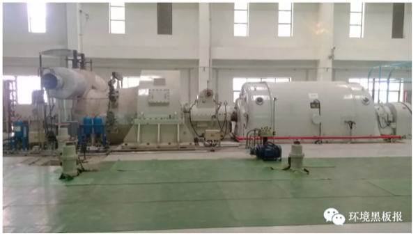
余热锅炉提供的过热蒸汽进入汽轮机做功驱动发电机发电后，蒸汽进入凝汽器冷凝为凝结水，由凝结水泵将凝结水加压后经两级抽汽器、汽封加热器、低压加热器和除氧器，除氧后由锅炉给水泵返回余热锅炉。低压加热器和除氧器所用蒸汽在汽机运行时由汽机抽汽供给（这部分的内容就稍微不太好理解了，我就不加详述了，毕竟涉及的热能对象太多，没有设计或运营经验的人很容易把东西搞混）。
4.12.4 后端处理——环保系统
- 烟气净化系统
烟气净化系统主要有：炉内脱硝系统、半干式综合反应塔、活性炭吸附系统、布袋除尘器系统、烟气排放系统、烟气在线监测系统和飞灰输送系统等组成。
炉内脱硝系统多采用选择性非催化还原法（SNCR）的工艺，该工艺将20%氨水溶液喷入炉膛温度为850～1000℃的区域，氨水作为SNCR工艺的还原剂迅速热分解成NH3和其他副产品，随后NH3与烟气中的NOx进行还原反应而生成N2。
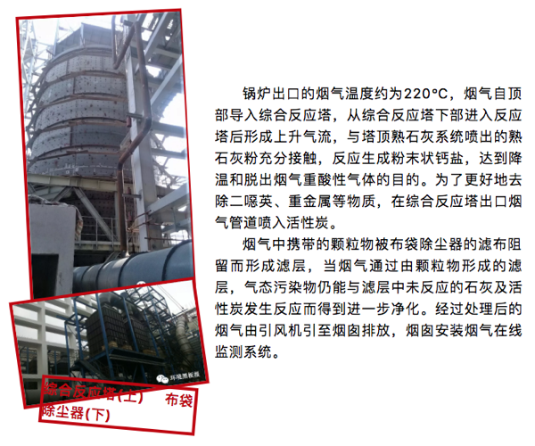
此外，焚烧炉还采取控制燃烧的方式减少二噁英的生成，具体措施为：焚烧炉焚烧垃圾的温度控制在1050℃；控制烟气在850℃以上高温区停留时间不少于2S；通过水冷壁管吸收等措施尽量减少烟气从高温到低温（400～200℃）过程的停留时间。
现在国家环保的要求越来越高了，颇有赶英超美的态势，动辄就提达到欧盟标准，于是乎不少发达区域的项目还增加了SCR（催化脱硝）和湿法处理（脱酸脱硫），进一步提升了烟气排放的指标要求。
- 灰渣处理系统
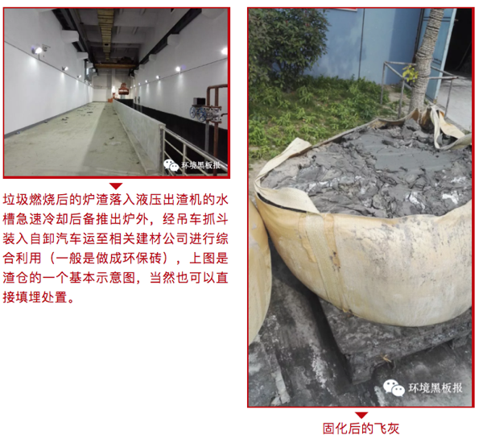
烟气净化系统中烟气所含的飞灰，由布袋除尘器捕集至除尘器灰斗，所有灰斗内飞灰经密闭式输送机送入飞灰储仓，飞灰属于危险废弃物，属国家法律监管的内容，需要做无害化处理，国内一般的飞灰会进行水泥固化处理，飞灰经固化处理达标后运至养护棚暂时存放，经一周时间固化稳定后，送至飞灰固化砌块填埋场填埋处置。下图是养化过程中的飞灰，基本粘合到了一起，不容易渗出有害物质
- 渗滤液处理系统
作为生活垃圾焚烧发电工艺的配套工程，渗滤液处理站所处理的废水包括垃圾储坑收集的渗滤液、地坪及垃圾车辆冲洗废水，有时候也会将生活污水一并处理。处理工艺多为生化+物化的组合工艺，常用的工艺有由两相厌氧池、A/O、MBR、纳滤（NF）等组合而成。
垃圾储坑内的渗滤液收集进入底部渗滤液收集池，通过水泵加压进入混凝沉淀池中进行预处理，去除较大的悬浮颗粒物。经过预处理后的污水进入调节池进行水质、水量的调节，之后通过两相厌氧池、A/O池、MBR处理装置、纳滤（NF）装置等工艺单元进行处理，废水处理达到纳入污水管道标准后接至当地的污水处理厂进行集中处理。
两相厌氧池、A/O池、MBR处理装置、纳滤（NF）装置等单元产生的污泥一起进入污泥浓缩池进行再次泥水分离，浓缩后的污泥加压送至离心式污泥脱水机脱水，污泥浓缩池上清液及脱水机产生的废液回流至调节池进行再处理，离心污泥脱水机产生的泥饼运至厂内焚烧炉焚烧处理。
渗滤液处理站收集池、厌氧池等采用加盖设施防止臭气外泄，垃圾渗滤液处理过程中产生的恶臭气体经除臭装置处理后达标排放。
针对渗滤液处理我只能算二把刀，详细工艺流程还需要各位大神补充完善。在下面上了两张图，左图是渗滤液前处理-除砂池，右图则是渗滤液处理站中的膜组件，供大家欣赏。
垃圾焚烧发电的工艺流程也就为大家大概介绍到这里了，希望大家不吝批评，相互学习。
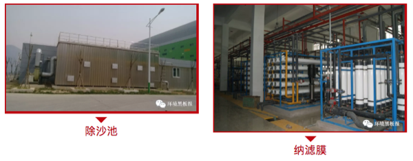
作者：小祁 校稿：看透、胜利屯屯长 编辑：栟
4.13 生活垃圾焚烧发电知多少
前不久，“环境黑板报”推出一篇名为《垃圾焚烧发电该怎么烧》的文章，详细说明了垃圾焚烧的工程流程，鉴于自己的环境监测工作也接触过垃圾焚烧发电工艺，作者决定从环境监测的角度谈谈垃圾焚烧发电的现状以及存在的问题，希望对工作业务涉及到生活垃圾焚烧发电工艺这块的各位环境小爬虫有所帮助。
4.13.1 从填埋到焚烧
随着城镇化建设的深入发展，生活垃圾围城的问题已经是老生常谈了，如何处理随着人群聚居和工业发展带来的与日俱增的生活垃圾已经成为目前城市环境管理的一个重要课题。生活垃圾填埋不仅占用空地，伴随垃圾填埋产生的渗滤液及所溢出的恶臭气体也会对周围环境造成污染。该举措的应用已经慢慢在减少，生活垃圾焚烧发电便成了为数不多的选择。
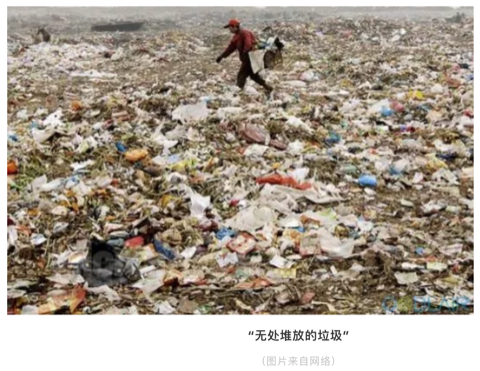
4.13.2 工艺流程
由于在《垃圾焚烧发电该怎么烧》一文中，已经将垃圾焚烧发电的工艺流程阐述明白了，本文就简单将该流程用两张图表示，若有需要更多了解的，可以阅读《垃圾焚烧发电该怎么烧》。
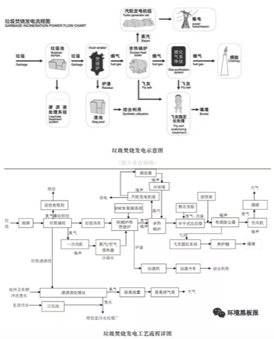
4.13.3 工艺应用现状
根据某市环境监测站对该市生活垃圾焚烧电厂的监督性监测情况，从中选取5家具有代表性的生活垃圾焚烧电厂（ABCDE）来分析垃圾焚烧发电的运行状况。5座生活垃圾焚烧电厂的垃圾日处理量、发电机组容量、焚烧炉类型及烟气净化工艺见表1。
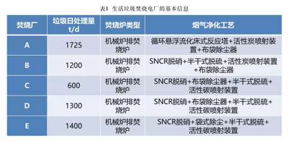
为全面评价城市生活垃圾焚烧发电厂的焚烧烟气污染物排放现状，根据我国《生活垃圾焚烧污染控制标准》（GB18485-2014）要求，评价因子主要包括\(SO_2\)、\(NO_X\)、\(CO\)、\(NH_3\)、\(HCl\)、颗粒物、重金属及其化合物等。现场采样时做好烟温、湿度、烟气流速、烟气流量的观测记录。
根据最近一次的监督性监测结果（见表2），在2017年第4季度，这5家生活垃圾焚烧电厂的排放烟气中，\(SO_2\)、\(NO_X\)、\(CO\)、\(NH_3\)、\(HCl\)、烟尘、重金属及其化合物等污染物的排放浓度指标均符合《生活垃圾焚烧污染控制标准》（GB18485-2014）表4的标准限值要求，5家生活垃圾焚烧电厂均实现焚烧烟气的达标排放。
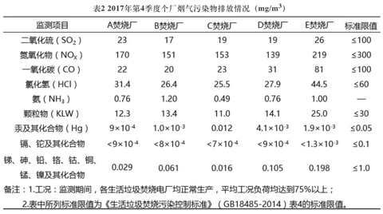
其中A厂、B厂、C厂为国营企业，使用的处理工艺和工程配套相对中规中矩；D厂、E厂为民营企业，其中D厂近期刚完成扩容建设的环保验收，在工程运营管理和设施配套建设方面投入较大，整体的工程建设和厂区环境较优；而E厂的环保设施长期未更新，且厂区环境不佳，周边堆满了垃圾焚烧工艺产生的飞灰固块，未及时运输填埋，其垃圾焚烧尾气处理的效果也不及其余4家焚烧厂，从2017年第4季度的监测数据可看出，E厂各项烟气污染物排放浓度均高于其余4家焚烧厂，且接近国家排放标准。
4.13.4 现存问题探究
从该市的垃圾焚烧处理厂的运行情况来看，目前垃圾焚烧发电工艺的使用和运营管理已经较为普遍和成熟，虽然民众对于垃圾焚烧厂的建设运营存在一定偏见，但是垃圾焚烧发电工艺对于减少垃圾存在体量，实现变废为宝的效用是显而易见的。正常运营下的垃圾焚烧电厂对于环境的污染和损害处于可控范围以内。垃圾焚烧电厂之所以会发生污染事故，引起民间巨大争议，关键还在于生活垃圾焚烧发电工艺流程的管控不力。
- 垃圾分类回收
首先，在工艺流程的前期工程——垃圾接收运送系统中，运送垃圾至焚烧厂处理前，各地区应做好第一步的垃圾分类回收工作。可以说我国绝大部分地区的垃圾并未进行分类直接运送至垃圾焚烧厂进行焚烧处理，这将影响垃圾焚烧厂的焚烧效率，同时不能及时回收垃圾中的可利用组分，不利于降低焚烧厂的垃圾焚烧负荷。我国在2017年颁布《生活垃圾分类制度实施方案》，在工艺流程明确垃圾分类为有害垃圾、易腐垃圾和可回收物，要求各地区对垃圾进行分类处置，但是实行效果并不明显，配套的分类垃圾箱因民众垃圾分类意识不强而成为摆设。垃圾焚烧厂的运载负荷过大，无法保障将工艺运行产生的固、液、气态污染物浓度控制在国标以下。
- 焚烧温度850-1000℃
其次，在工艺流程的中期工程——垃圾焚烧系统中，应控制好焚烧炉温（850-1000℃），这点对于有效控制垃圾焚烧过程产生二噁英尤为关键。对于炉温的控制疏忽易产生三致物质二噁英，从而影响周围居民生活环境。
- 污染物的管控应全面到位
再次，在工艺流程的后期工程——环保系统中，对于固、液、气态污染物的管控应全面到位，环保工程中的焚烧尾气净化处理单元、垃圾渗滤液处理单元及炉渣飞灰等固废处理单元在日常运行管理中操作不当，容易产生污染物泄漏，从而污染周边环境，引起民怨。当前生活垃圾焚烧处理工艺配套的环保工程建设已较为成熟，其中垃圾焚烧飞灰已被列为危险废物名录，垃圾焚烧飞灰的固化砌块填埋处理应得到更大重视。
4.14 结语
生活垃圾焚烧发电工艺作为一项成熟的垃圾处理应用技术，需要企业的投入、政府的管控、民众的监督多项并举，才能在不造成环境污染的前提下更好地为社会服务。
作者：黑夜雄 校稿：看透，胜利屯屯长 编辑：栟
4.15 大气环境监测都用些啥设备？
从事大气环境监测工作已有五年之久，一直在科室文案工作与现场监测工作之间来回切换，乐此不疲。手头上的大气环境监测设备已经出现两次更新换代，借此文简要总结一番设备更新情况，并从中窥探大气环境监测技术的发展变化。
大气环境监测设备种类繁多，其中最常用的要属烟气分析仪和颗粒物采样分析仪。烟气分析仪主要作为固定污染源排放废气中的二氧化硫、氮氧化物等气态污染物浓度参数的监测仪器，而颗粒物采样分析仪则是主要针对颗粒物、烟尘等固态污染物的采样设备，后续的颗粒物浓度分析依托于采样所得的滤膜进行烘干称重计算得出。
4.15.1 关于烟气分析仪
4.15.1.1 过去式
以市级监测站的技术配备为例，2013年至2015年阶段的烟气分析仪主要是定电位电解法烟气分析仪，该类烟气分析仪的主要原理是利用抽气泵抽取废气样品进入主要由电解槽、电解液和电极组成的传感器。气态污染物通过渗透膜扩散到敏感电极表面，在敏感电极上发生氧化反应，由此产生极限扩散电流。在一定范围内极限扩散电流的大小与二氧化硫、氮氧化物等的浓度成正比，所以可由极限扩散电流来测定气态污染物的浓度。典型的设备要属德国德图公司的烟气分析仪testo335、testo350。使用烟气探针进入废气排放烟道，气体污染物通过探头扩散进入仪器传感器，在敏感电极上发生氧化反应，产生电流转换为电信号并通过手操器上的显示屏读出气体污染物的浓度。在该阶段国内的环境监测仪器公司技术研发力量比较薄弱，国产仪器在国内环境监测部门的推广力度较小，市级监测站的烟气分析仪主要来自德国德图的仪器设备。而testo350相比testo335的优势在于其抽气泵的流量更大，气体浓度测量的准确度更高；烟气进入传感器前处理设施更为齐全，仪器的使用寿命更长。
4.15.1.2 现在式
2016年至2019年阶段的烟气分析仪主要是傅立叶变换红外烟气分析仪。由于定电位电解法在烟气湿度大、污染物排放浓度低及高浓度一氧化碳条件下，测试数据精确度不足，难以满足高精度测量要求，而傅立叶变换红外烟气分析仪采用全程加热（180℃含分析池加热），彻底消除了水汽冷凝结露引起二氧化硫、氮氧化物等的分析误差，同时使用傅立叶变换红外法有限避免一氧化碳在定电位电解法中的干扰效应。在烟气含湿量大、超低浓度污染物排放、高浓度一氧化碳存在的特殊监测环境条件下，使用傅立叶变换红外烟气分析仪进行废气监测可保证测量数据的准确性和有效性。
该红外分析仪主要利用二氧化硫、一氧化氮气体在6.82~9μm、5.3μm波长红外光谱具有选择性吸收的原理，其光通量的衰减与二氧化硫、一氧化氮的浓度关系符合朗伯-比尔定律。红外烟气分析仪相比电化学传感器寿命会更长，响应时间快，抗中毒性好，反应灵敏，性能稳定可靠。但是缺点就是功耗大、结构复杂、价格贵。
目前典型的傅立叶红外设备是芬兰Gasmet Dx4000型傅立叶变换红外烟气分析仪。该分析仪主要由气体分析仪系统（GICCOR干涉仪、Peltier制冷检测器、样气室）、便携式采样系统（采样探针、加热采样头、加热采样管、便携式采样主机）、Calcmet图形分析工作站、11种气体组分出厂标定光谱库分析系统等组成。
Dx4045型傅立叶红外烟气分析仪的基本构造与Dx4000型相似，包含FT-IR多组分气体分析仪主机、图形分析工作站、锂充电电池、PDA手操器、50组分种出厂标定光谱库等。两者的应用差别在于Dx4000型傅立叶红外烟气分析仪应用于常规的固定污染源废气污染物的监测分析；而Dx4045型分析仪主要应用于突发环境事故的应急监测，作为现场分析有毒、有害气体的快速定性定量分析工具，该仪器采用便携式设计，方便携带，抗震性强，适用于应急监测工作环境。
该阶段的国内环境监测设备仪器公司，如青岛明华电子仪器公司、青岛崂山应用技术研究所，已经具备独立生产定电位电解法烟气分析仪的能力，然而对于傅立叶变换红外分析仪，国内设备的生产技术仍不成熟，红外核心元件制造离不开国外实力厂商的长期供应，市级监测站的红外分析仪仍以国外品牌为主，主要来自芬兰Gasmet厂商的傅立叶红外分析设备。
4.15.1.3 将来式
随着二氧化硫和氮氧化物分析测定的新国家标准方法出台，未来的烟气分析仪市场也将有属于紫外差分吸收光谱法烟气分析设备的一片天地。
紫外差分吸收光谱分析法的原理是气体样品中二氧化硫和氮氧化物在紫外波段具有特征吸收光谱，紫外光经过气体室被待测气体吸收，吸收后的紫外光进入光谱仪。通过对光谱信息的处理，分离出光谱中的快变部分，并对其进行反演计算，从而得到待测气体中二氧化硫和氮氧化物含量。对比定电位电解法易受多种气体交叉干扰及存在低浓度精度差的问题；傅立叶红外法的红外段有水的吸收，需去除水的吸收干扰，且存在容易受碳氢化合物干扰，不好滤除的问题，运用紫外差分法在紫外段没有水的吸收，且通过选择合适的吸收波段和相应的数学算法，完全避免交叉干扰，紫外差分法烟气分析仪在未来的大气监测工作中将被得到更多的推广使用。当然紫外法仪器自身也存在一些不足，如灵敏性一般，二氧化硫的最低量程只能到100ppm，而傅立叶红外法仪器可到50ppm，定电位电解法仪器一般为200ppm。
国内的环境监测仪器商在紫外烟气分析仪的研发方面投入力度大，时间也较早，相对于傅立叶红外烟气分析仪，他们与国外厂商的紫外分析仪器性能差距相对较小。典型的仪器要属青岛明华电子仪器有限公司的MH3200型紫外烟气分析仪。MH3200型紫外烟气分析仪具备自己的特点：1、一体式设计：一根枪完成测量，实现真正的便携式运用；2、热湿法除水：全程加热，水分以气态形式存在于被测烟气中，无论湿度多高，测量过程中二氧化硫不易损失，相比于传统的冷干法除水，更适用于高湿低硫的监测环境。3、枪管真空技术：既能防烫，又能使气室温度稳定。4、云平台应用：内置NB-IOT模块，只要有网络，就可操控仪器。在便携性、前处理效果、稳定性、实时性方面，国内紫外仪器具备和国外一流厂商设备竞争的实力。
无论是定电位电解法、傅立叶红外法或者紫外差分法，三种方法各有优劣，随着烟气监测技术趋向多样化，仪器设备不断更新精进，环境监测工作者可根据实际的监测条件进行测定方法和仪器型号的合理选择，从而实现烟气污染物浓度的精准监测。
4.15.2 关于颗粒物分析仪
4.15.2.1 过去式
在颗粒物采样方面，国内仪器的技术足以适用当前国内大气环境监测需求，考虑到国外仪器的价格虚高，环境监测部门的仪器采购需要控制成本，因此一般采用国内品牌的颗粒物采样仪器。以市级监测站的配置为例，2013年至2015年阶段，该时期的监测仪器主要是武汉天虹仪表有限责任公司的TH-880F型微电脑烟尘平行采样仪。滤筒称量分析仪器为北京赛多BP221S型的万分之一精度电子天平。颗粒物采样分析的原理是将烟尘采样管由采样孔插入烟道中，使采样嘴置于测点上，正对气流，按颗粒物等速采样原理，即采样嘴的吸气速度与测点处气流速度相等，抽取一定量的含尘气体。根据采样管滤筒上所捕集到的颗粒物量和同时抽取的气体量，计算出排气中颗粒物浓度。该阶段的颗粒物采样仪存在的问题在于：抽气泵流量不足，最高仅为80L/min，经常在高负压的管道中无法完成等速采样所需的采气体积任务；抽气泵前的过滤装置除水效果不佳，经常出现停泵现象；采样滤筒材质为玻璃纤维，在采样过程中易出现破损失重问题。
4.15.2.2 现在式
2016年至2019年，由于颗粒物采样分析的标准未做大幅变更，只做了简单的补充修订，颗粒物采样分析仪器的改进更新程度较小，在该阶段市级监测站主要增购了青岛崂山应用技术研究所生产的崂应3012H型烟尘采样仪。该仪器的采样泵流量更高，可达100L/min，对于高负压管道的采气任务可完全胜任；同时其泵前的过滤装置除水效果较好，可有效减少停泵现象；过负荷预防装置可有效保护抽气泵，避免过载烧泵问题。此外，采样滤筒采用石英滤筒，其高强度和高韧性可减少滤筒在使用过程中的人为破损失重问题。
4.15.2.3 将来式
燃煤电厂超低排放改造工作如火如荼，改造后的电厂大气污染物排放浓度要求更为严苛：烟尘≤10mg/m3、二氧化硫≤35mg/m3、氮氧化物≤50mg/m3。燃煤电厂超低排放的重点和关键在于烟尘的达标排放。国家也及时推出了低浓度颗粒物测定的新方法标准。采用普通的颗粒物采样测定仪和万分之一天平只能用于准确定量排放浓度≥20mg/m3的固定污染源颗粒物浓度。在低浓度颗粒物的监测条件下，需采用新标准方法进行监测分析，我市级监测站已增购青岛崂应3012H-D型便携式大流量低浓度烟尘自动测试仪用于准确测定低浓度颗粒物的排放数值。
相比普通的3012H型烟尘测试仪，3012H-D型低浓度烟尘测试仪的最大不同在于增设了低浓度烟尘多功能取样管（即图6的配件1），根据低浓度颗粒物测定的新标准要求，原来用于采集颗粒物的采样滤筒变更为包含石英滤膜的一体式采样头，采样结束后将整个采样头取下进行烘干称量，这样可保证滤膜在采样过程中不会因样品转移而造成破损失重，同时称量分析仪器更新为北京赛多BP221D型的十万分之一精度的电子天平，确保低浓度颗粒物测量的准确性和有效性。
未来当面对更多具有超低排放要求的企业监测任务，青岛崂应3012H-D型便携式大流量低浓度烟尘自动测试仪具有更大的用武之地，而传统的烟尘测试仪将陆续退出环境监测历史舞台。
4.15.3 结语
总体而言，烟气分析仪已经从以往定电位电解法仪器的一枝独秀向定电位电解法、傅立叶红外法、紫外差分法仪器齐头并进发展。颗粒物采样分析仪也从以往的粗放式采样称量慢慢向精细化的低浓度测试方向演变。如今环境监测系统的垂直化管理改革正在有条不紊地逐层落实推进并已接近尾声，加强各环境监测部门的监测能力建设，确保监测数据的准确性和有效性，守住环境监测工作的底线刻不容缓。环境监测队伍的能力建设离不开人才队伍的梯队建设，更离不开适应当前监测形势发展要求的仪器硬件配套建设。“工欲善其事，必先利其器”，在当前国家不断更新各种监测项目标准的大环境下，仪器操作精细化、测量数据实时化、分析方法多样化将是大气环境监测仪器设备的发展方向，未来的大气环境监测仪器设备更新进展，笔者也将持续关注！
作者：黑夜雄 校稿：看透 编辑：元宝大人
4.16 石化行业有机废气现场监测方案
2018年11月3日发生的东港石化碳九泄漏事故令人刻骨铭心，这次深刻的历史教训让福建泉州不光彩地上了一次头条。“天桐1号”油轮靠泊泉州市泉港区东港石化公司码头，操作员在裂解碳九的装船作业中违规人工拖拽导致输油软管破裂，裂解碳九油品泄漏。在事故过程中东港石化对事故原因和泄漏数量的谎报瞒报更是让人触目惊心。碳九泄漏事故对泉州市泉港区域的海水环境和大气环境的影响不言而喻，此次事故之后有关政府部门对石化行业的环境监测和安全生产监督力度进一步提升强化，不仅有利于约束企业做好废气废水的有效处理并达标排放，而且有利于企业快速排查是否有排放浓度异常及污染物泄漏等安全隐患，避免类似由于安全生产责任事故引发的环境污染事件再次出现。
目前石化行业企业排放的大气污染物种类复杂、排放总量大，石油炼制工业企业的监督性监测涉及到许多典型的有机污染物项目，包括挥发性有机物（VOCs）、三苯（苯、甲苯、二甲苯）及非甲烷总烃（除甲烷外的气态有机化合物的总和）。故本文以石油炼制工业为典型简要介绍石化行业的有机废气监测方案。根据《2019年度泉州市重点污染源监督性监测质控抽测工作实施方案》、《固定污染源废气挥发性有机物监测技术规定》（环办监测函[2018]123号）、《石油炼制工业污染物排放标准》（GB 31570-2015）等的相关要求、行业标准、地方标准编制本行业的现场监测方案。
根据现有仪器、资质认证情况，确定实验分析标准方法及现场采样监测方法。根据不同监测方法做好实验前准备工作，准备监测仪器、耗材等。
1、现场检查
到监测现场后了解企业生产工况、原辅材料投放量、生产工艺；检查废气排气管路、永久性采样口、采样测试平台和排污口标志是否规范，通风设施是否合理，有无稀释排放等；查看工况是否稳定；
2、工况检查
在监测期间，需两名监测人员同时核查企业实际生产情况，记录排污工序监测期间的实际工况负荷。工况核查主要根据生产工艺原辅材料用量、生产线数量及其运行情况、生产工序是否排污、排污流向等；对于储罐类排放采样，应在其加注、输送操作时段内采样；并按要求完整填写《生产工况记录表》、《废气企业情况现场调查表》。
3、监测仪器准备
在开展监测工作时，先对监测仪器进行质控准备。
1.1、采样位置确定
根据《固定污染源废气监测技术规范》（HJ/T397-2007）中“5 采样位置与采样点”规定进行确定。
①采样位置应优先选择在垂直管段，应避开烟道弯头和断面急剧变化的部位。采样位置应设置在距弯头、阀门、变径管下游方向不小于6倍直径，距上述部位上游方向不小于3倍直径处。对矩形烟道，其当量直径等于2倍边长乘积/边长和。
②采样断面的气体流速最好在5m/s以上。
③受空间限制，至少选取采样断面与弯头等的距离至少是烟道直径的1.5倍，并适当增加测点数量和采样频次。
④圆形烟道采样点确定
⑤矩形烟道采样点确定
⑥对于气态污染物，在烟道中混合比较均匀，采样位置不受限制，但应该避开涡流区。如果同时监测排气流量，采样位置按1.1.1选取。
1.2、监测内容
石化行业有组织废气的主要监测项目为苯、甲苯、二甲苯、非甲烷总烃，并同步记录含氧量、含湿量、烟温、标况流量等烟气参数。
2.1、采样点监测点布设
2.1.1、厂界无组织监测
企业边界监控点布设按《大气污染物无组织排放监测技术导则》（HJ/T55-2000）、《环境空气质量手工监测技术规范》（HJ194-2017）的规定执行。主要测量内容为风向风速测定，测量时，将风向风速表置于被测单位开阔地带，连续测定十分钟，每隔1分钟读一个即时风向和风速值，计算十个值得平均风向风速。若被测单位无开阔地带，应置于高出测（一般不超过15m）。若测定期间风向风速变化较大，可适当延长测定时间；
2.1.2、厂区内环境监测点布设（挥发性有机物）
生产工序（设施）在有集气系统的密闭空间，厂区内监控点布设在密闭工作间主要溢散口（如门、窗、通风口）外1m，不低于1.5m高度处，监测点数量不少于3个，选取浓度最大值。
生产工序（设施）没有集气系统的非密闭空间（包括无集气设施的密闭空间），厂区内监控点布设在生产设备外1m，不低于1.5m高度处，监测点数量不少于3个，选取浓度最大值。特殊情况下，采样位置可适当延伸但不得超过10m。
2.2、 监测项目
石化行业无组织废气主要监测项目为苯、甲苯、二甲苯、非甲烷总烃。
1、现场采样监测过程中需及时记录现场监测情况，填写现场采样记录，及时记录现场监测因子的数据。监测人员进行签名，并交给审核人进行审核。仪器使用前后确定仪器状态，填写《仪器使用记录表》等。
2、监测过程及样品应严格按照规范要求进行保存及运输。
3、采样结束后，需要对大气采样器的流量进行校核，检查其流量示值在采样前后变化不大于10%，否则需重新进行监测。
4、根据现场调查现场企业资料及现状，填写《现场采样企业确认表》与《生产工况记录表》、《企业反馈单》、《废气企业情况现场调查表》等，并由企业签字盖章。
5、采集样品在确保规范保存后及时运送回实验室，并与实验室分析人员进行样品交接，沟通监测情况，填写《样品交接表》
1、参加抽测监测的技术人员均持有相应监测项目的环境监测人员技术考核合格证。
2、在整个监测过程从采样、样品保存、分析和数据处理均按《固定污染源废气挥发性有机物监测技术规定》（环办监测函[2018]123号）和《固定源废气监测技术规范》（HJ/T 397-2007）中的有关技术要求进行，采取有效的质量控制措施。
3、现场采样监测仪器设备均需贴有检定合格证及管理标识；
4、所有采样记录和分析测试结果按规定和要求进行三级审核。
校稿：次要男主角 编辑：天枫
4.17 设计之三境界
身在一家小型设计院的我近来也算忙碌，接收的任务越来越多，遭受的埋怨也只增不减。业主的要求从深度上来说是越来越高，从广度来说也叫越来越奇葩。如今物价、房价飞涨，而设计费用十几年都没有涨价了，不但不涨，还有明显的下行压力，不少设计院同行每天都在感慨钞票越来越难赚。
4.17.1 且话设计工作之艰难
尽管设计院的工作状态热火朝天，但是国内设计院的地位却处于持续走低的态势，有的设计院甚至堕落到跪舔业主的地步。业主过于强势，当然最重要的原因是资本的力量。而业主对设计的轻视，则实实在在地透露他们的想法“你们这些人的服务不值得我们提供这么高的设计或咨询费用(即使是现在的设计费要按国家计价标准打个三五折来议价的情况下)”。还常有业主的人念叨着“这么简单的事，你为什么做这么慢，出的图纸质量那么差”，或如“别的院什么资料都没有也可以做到，你们为什么就做不到?”不少设计院同行或许当时不便发作，内心里却在想“那你为什么找我做设计，不找人家做呢?”我们在这里，先不忙着对这两番言论进行口诛笔伐，业主不断的指责，当然有的是无理的要求，或主要用来推卸责任;但也有的是实事求是，正中要害的。毕竟，现在许多业主也有懂行的人(许多都还是设计院出身的)，总拿那套“手上没有提资，没法做设计”，“需要一个周期才能做好设计”一成不变的理由，很难让人信服。
所谓“人家做的到，自己却做不到”的事实如果真的是现实，着实让人有点抑郁。而偶尔考虑一下自己的问题，个人认为对提升自身还是很有帮助的。毕竟天下大道，即使做同样一件事，也会依据水平和程度的区别，自然而然地被分为三六九等，设计这一传统行档也不特殊。曾经有一句话传得很响，叫做“三流的企业做产品，二流的企业做服务，一流的企业做标准。”到了设计这行，我由此联想到另一句话“三流的设计靠画图，二流的设计定方案，一流的设计搞管理。”
首先声明下，本人是做垃圾焚烧厂的，因缘际会，对交叉相关的环保、火电、市政的设计也略知一二，而本人也算不得业界大牛，也远远没有混到设计总工、设计总监那个阶层，对设计这一角色的了解也仅仅来源于我这几年的设计经历。摸爬滚打的历练加层出不穷的事故可能并不是所有设计院人才的常态，所以我的观点和大家有所不同也是非常正常的。但通过我和一些朋友的交流，我的这些想法部分符合一些中小型设计院，尤其是成立年头不算久，骨干普遍年轻的设计团队，在这里也只希望能和大家有一些共鸣。
4.17.2 三流设计境界之山是山、水是水
三流的设计为什么靠画图呢?所谓三流就像人生境界中“看山是山，看水是水”状态。这里要插一下设计的流程，一般一个项目落地首先要有可行性研究报告，再有初步设计方案，然后再有施工图设计。最后的施工图设计是怎么样的呢?按一个老师傅的观点，就是大样图，初步设计做的好，后人拿着你的方案，就自然而然地可以做出好的设计，至于做不出来，当然只能怪他了。落实到图纸上，就是工艺专业画的管道，结构专业做的基础，电气的一张张电气原理图。当然要知道大样图也是需要学习锻炼的，非常注重细节，学习的过程也是很枯燥无味的。属于产业链底端的原因是做施工图时候各种条件，边界都已经确定下来了，只要按着规范走，一般不会出大的错误。所以这些工作设计院内一般都是交给相对年轻的同事，也算一个比较好的学习切入点，而一些天天忙做方案的团队甚至会将后续工作直接委托给外部单位，有人监督完成即可。
可在业内的确有部分设计院不重视初步设计甚至方案设计，直接就到施工图的，毕竟在现在行业中从零开始做起的设计人员太过良心了，直接套图或以往类似项目上修改往往更有效率。有的做得还不错，套图成了精，甚至成了向同行炫耀的资本。无他原因，是因为方案早就被旁的人讨论甚至在别的项目预演过了，甚至不止一次。你不仔细考虑的方案，为什么就敢于去详化，无非是觉得别的工程用了，在较早时间被其它同事，前辈或是别的设计院考虑过了，实践成功了，我的运气总不至于把它干坏了。这让我想起一句话，你自己没有苦难承受的，十之八九就是被别人承受了。举个只会画大样图的例子，前苏联有一种赫鲁晓夫楼就作为一种标准模板，短时间内建成了一批建筑，就是这类，许多房间布局都用标准化的形式明确了。做这种工程，都不好意思和人家说自己在做设计，因为需要花脑子设计的都早就被专家定下来了。
即使没做过这类工程，不要紧，从哪里“借”或者“偷”一套资料，照猫画虎，搞出来一个工程，虽然往往漏洞百出，但只要原工程的底子好，总有修改的机会，而修改的过程中，就会积累一些自己的经验。我把这种经历称为摸爬滚打，一次次地尝试，一次次地试错，年轻的设计人员或许也想过为什么厂房这样设计，房间这样布局，为什么是先这一套工艺而后另一套，一个疑问接着一个疑问，最后到痛苦难以自拔，靠加班画图聊以自慰，到最后练成了善于套图的能力。
4.17.3 二流设计境界之山非山、水非水
所谓的“二流做方案”的，有点类似“看山不是山，看水不是水”的状况。作为设计人员来说，只靠套图来做项目，说起来总会被同行取笑，如果是做建筑方案设计的，人家还会说你是剽窃别人的创意。勇于提升自己的设计院会选择充分理解既有的项目，在新的项目中改进优化，并形成自己的东西。在这类情况下，设计人员开始透过现象看本质，看到的不是管道、电缆或钢结构平台，而是锅炉的汽热交换、反应池里的细菌或是各种设备的参数变化。方案代表着一个设计院对一类工程的充分理解，由照猫画虎进化到了指点江山的时代。到这个阶段，一般不会出现“A项目用原有已完成的B项目来进行设计”这番过于简单且不易操作的论断了，不同专业都会根于新项目的要求提出自己的建议，毕竟世界上没有哪两个项目是完全一样的。
当然，许多设计院从“三流”走向“二流”的路并不平坦，尤其是现代社会，崇尚实用主义，完全弄懂弄透一种工程实践，在许多设计院都成了奢侈品，许多设计院聪明且习惯性地把问题推给各个类型的厂家，寄希望他们能解决各种问题，承担各类责任，这又进一步减弱了自己在整个工程中的作用。现在许多设备公司甚至具备整体的工艺设计的能力，设计院反倒承担配合的任务(如建筑、结构和水暖电的配合)，相当于放弃了最核心的工艺部分。
于是乎，许多设计院想开拓新的领域的时候，第一步是获取一个已经投产项目的全部资料，进行消化，进而开展设计活动。敢于如此行事是因为没有必要彻底地掌握这套方案，核心的东西让别人做，外围的东西与自己原有的工程实践是接近的。
当然这个思路不是百试百灵的，有朋友举了老单位一个钢铁设计院的例子，在钢铁形势欠佳的那几年，领导考虑做养鸡场的设计。不料经过多番考察，得到的结论是，自己很难短时间啃下这类项目，自己工作的精度尚无法满足此类项目的要求。这不是为了黑人家啊，要知道钢铁行业的设计工艺复杂，标准很高，高炉、转炉、铸造、扎钢，几乎没有人能够通晓所有的工艺，同时厂内高温高压有害的介质比比皆是。但竟然拿不下一个小小的养鸡场，怕是没有那么多时间精力和毅力将这类工厂整体的工艺吃透吧。
掌握方案不仅让某些设计院占在行业的高点，而且其附加值也很高。一些国外设计院的方案，可能就几十页，但收费非常高，它们一般以咨询的名义介入，可以指导一个项目全流程的建设和运营情况。一些建筑方案更是贵的惊人，一张效果图的价值可能是另一个团队花半年才能创造的。
4.17.4 一流设计境界之山还是山、水还是水
而到了所谓的“一流”的设计院，则又到了“看山还是山，看水还是水”的状态了，对工程的本质了如指掌后，反倒技术本身不是那么关键了。水平也不仅仅单指技术水平的高低了，而是更多的展现高深的管理水平。这样的设计院大概率已经脱离了传统“苏式”的设计院的架构，走向国际咨询公司或工程公司的套路。人员组成更为全面，工作更加细化，甚至对新技术的研发也信手捏来。很多人可能知道阿尔斯通的高铁技术，GE的电气技术，但实质上这两家公司在烟气净化和水处理上都很有建树。他们将其它领域的管理方式植入到环保领域中，也起到了很好的效果。
鉴于我对这方面了解的还很少，就拿几个例子来表现管理能力在设计行为中的重要作用。
一家知名的工程公司能够完全做到无纸化办公，且团队内的人员能够在不见面的情况下高效地完成整个设计，且最大限度地控制错误机率。这家公司有着强大的内部系统网络，不仅能够做到设计人员提资与接收提资，校审核实的全网上流程，甚至连设计人员的成品都是在内部网络上的，这些员工想离职连自己的设计成果都拿不走。近年来比较成熟的设计软件允许数位设计师同时在一个空间进行操作，且保证他们的每一步操作都在服务器上留有痕迹，这时项目管理者不仅能对他们的工作进行审查，而且能够时刻追踪工程设计的动态。在这个环境中，似乎个体的作用被显著压掉了，甚至有传说如果公司某天决定裁掉一批雇员，第二天新的团队入驻办公室，凭借保存的完整且标准化的资料，很快就可以完全无缝连接以往的项目。
对于外面不了解的人会觉得这个管理的方式很牛，但往往在里面的人却觉得一切习以为常，所有人的作用如同高铁轨道上的螺栓一般，稳定而少有失误。
4.17.5 设计无易事，且行且服务
不得不说，现在我遇到的同行能做到这一步的少之又少，怕是忙着接各种各样的项目，自己都应接不暇，没法静下心来，考虑自身的提升。有时候还会觉得自己的业务已经很是精通，不需要再接收新的知识。但是现实是，遇到许多自己项目的问题，或大或小，总有让你束手无策的，有的或许本不是自己的问题，但如果无法指明正确的方向，那么只能说自己还没有精到极致的地步，所以我才说是做设计从来就没有那么简单。尽管如此，设计院还是要秉着服务的精神，串联业主和施工单位，竭尽全力提供优质的设计服务，在业界树立自己的品牌声誉。
作者：小祁 校稿：看透 编辑：竹而乐
4.18 智慧化，治不了懒癌
近年来，IOT的兴起使得智慧城市的理念大行其道。而随着2019年两会“智能+”被写入政府工作报告，智慧化宛如一场春风，席卷了各行各业，催生了无数的“雨后春笋”般的概念、业务和项目。环境行业当然也不能置身事外。现在随便建个给排水的项目，不装一些数据平台、专家系统、智能控制之类的东西进去，都不好意思出去讲自己的“先进性”了。但是，这些“乱花渐欲迷人眼”的智慧化系统，究竟能解决什么问题？真正用起来能带来什么样的效果，催生什么样的变革？恐怕能说清楚的人也不多。今天，就让我们开个题，来聊一聊环境领域的智慧化进程吧。
但凡是这两年在环保市场混的人，有关智慧化是什么应该都听过了各种各样的版本：政府版的、运营企业版的、设备供应商版的、IT服务商版的，不尽相同，但有个一般的套路是：一张图集成各种信息，辅以各种分析工具作为应用，实现很多很宏大的目标——听上去很Fancy很高大上的样子，似乎用上之后一下子能解决好多问题——而你真要追问起来上了智慧化系统后都能干什么，得到的答案却又五花八门，政府说“一张图全管控、在线与民互动”，企业说“建设运营一体化管理打通”，设备供应商说“万物互联”，IT服务商讲“云化”，基本上各说各话，各自解决各自的问题。说到底，还是“智慧化”这个筐太大，自动化、信息化、数字化的各种概念都要往里装，装出来往往是个“四不像”。而如果概念不清楚，再往后讨论什么都是白搭，所以笔者想先尽量用最直白的方式，给大家简单梳理一下智慧化“是什么”和“能干什么”的问题，为下文的讨论搭好一个边界。
目前行业内聊的“智慧化”通常是个非常泛的概念，包含了自动化、信息化、数字化、人工智能的各阶段应用。其中，自动化和信息化是基础；而自动化和信息化过程中产生的海量电子数据，支撑了数字化过程中的各种分析的开展和各种应用工具的出现；当数字化工具（算法、模型）发展到一定阶段，人们就开始教电脑使用这些工具，并藉由电脑不眠不休过目不忘的超强学习能力，快速迭代成为超越人类个体的人工智能。
具体到“能干什么”的层面，除了自动化的无人值守自动控制、信息化的无纸化办公、数字化的数据存储这些基本功能外，大概可以依照上面图中的三个阶段分成三个境界（存在一定的交叉）
境界一：看到原来看不到的
应用实例：实时数据展示（参考空气质量APP、手机看家里摄像头），在线办公（参考手机OA）
智慧化的第一层境界，是自动化和信息化过程带来的“随时随地，想看就看”的自由。自动化过程把光、热、声、化学等各种需要现场观察、现场测量的信号，通过摄像头、传感器、在线仪表等一系列媒介，统一变成了可远距离传输、可存储的电信号；而信息化过程中把原来很多写在本子上的死数据，变成了可存储、便于批量处理、有权限就能调取的活数据。两者相加，很多原来我们看不到的数据开始展现在我们面前。
境界二：想到原来想不到的
应用实例：知识库（参考搜索引擎），模型分析（参考天气预报、出行路径规划）
智慧化的第二层境界，是数字化过程中基于大量数据计算所获得的“检索+分析+预测”的能力。当大量原来看不到的东西变成了存取自由的电子文档，很自然的会生发出检索、统计、排序这样针对数据的应用，并基于这样的应用产生各种以过往数据（经验）为依据的分析和预测。简言之，遇到问题可以不问师傅问百度了，一个品牌产品的故障率不用再挨个厂收台账统计了，雾霾到底是本市产生的还是外面飘来的一眼就能看出来了（参考上面那张PM2.5图，几次重污染都是从南向北扩散导致的）；同时，原来需要专家才能掌握的经验和技巧（各种模型或精密操作）也能通过终端应用的植入进行快速复制和推广了。数字化的过程，更像是个人知识体系依托于数据库和网络的延伸，让人可以去思考和判断大量原来不能想到的事情。
境界三：做到原来做不到的
应用实例：机器学习（参考自动驾驶），生成对抗网络（参考α-zero）
智慧化的第三层境界，才真正到达人工智能发威的领域（也是狭义的智慧化）。如果说数字化过程是人利用各种算法、模型、应用工具去学习、判断和决策，那么到人工智能阶段，便是机器去自主学习了。现今随便一台PC机的数据摄入效率（几百万bps）都远超过人（听-几十bps，看-几百bps），基于足够大量的样本集，机器的经验池和判断速度可以很容易地超过人类。像时下比较流行的神经网络、生成对抗模型等，严格来说其算法对人而言已经不可追溯了（就是输出了几万次的迭代过程人也看不过来），也就是说，以后机器得到的结论，也许给机器制定学习方案的人都不知道是怎么得出来的——这个时候我是信还是不信呢？
尽管前景描绘的很强大，但我们还是需要一句话拉回来：
——非常非常遗憾的是，目前行业内绝大多数实例化了的、可应用的 “智慧化”系统，仍停留在“自动化+信息化”这个最初级的阶段，执行着“看到原来看不到”的功能，以展示+报警为主，连数字化进程都没有走完；好一点的，开发出了基于数据资源的统计类应用和分析模型，逐渐具有了预测和诊断的能力。至于什么人工智能厂网联调、自发性管理模型优化、机器识别风险预判、机器人自动巡检操作等等Fancy的概念，大多八字还没一撇，搞搞研究还行，离商业化应用还有很远。
划清了边界就会发现，当今环保市场上智慧化系统能实现的功能还仅是广义智慧化三步走中很小的一部分，那么这个 “走了半步”的智慧化过程到底值不值得推行呢？在笔者看来，推是一定要推的，智慧化是整个工业发展的大势所趋，制造业、电力、化工等行业在前面领跑了几十年了，环保要是逆着时代的康波走肯定会被淘汰——我想这也是很多智慧化项目“闭着眼也要上”的一个根本原因。然而，“闭着眼也要上”的背后有一个巨大的问题，就是用户主体往往缺乏一个明确的规划和积极的心态。而如果单纯的为了智慧而智慧，是很大概率要吃大亏的。为什么这么说？
其一：智慧化不是目的，是手段，没有目的的手段全是枉然
“上了再说”是智慧化应用中的一个大误区。无论上面说的（广义）智慧化系统如何有用，也只是一个工具而已，它们服务的是用户主体本身的目的。就好像，你安装一个淘宝APP（应用）是为了买东西，配置一个运动手环（设备）是为了锻炼。而如果你不需要买东西、不想锻炼，那么这各种应用、设备又有什么用呢？——都变成了光鲜亮丽的花瓶，久放积灰。
然而，就目前市面上的各类用户（政府、企业、环境监测部门等等）而言，真正能明确抽象出核心需求的实在不多，更多的还是喜欢“逛商场”式的根据功能清单选产品，或者说“看别人有我也要有”。结果花了钱都不知道该干什么用，反过来开始片面的追求“展示效果”——这一定程度上造就了目前环保智慧化市场在“看到”这个层面原地踏步，不能很好地向“想到”迈进的现状。
其实对于各种平台应用，华为任正非说过一句很实在的话：锄头做的再好也是工具，人吃饭是要靠种地的。
其二：产品的革新催生的是模式的变革，没有模式的智慧化没有未来
今年的3月31日是暴雪游戏发布《星际争霸》这款RTS游戏的21周年，今天人们谈起这款游戏的成功，往往会将其归功于产品绝佳的平衡性和游戏性。然而，人们很少想到的是，恰是这款产品在游戏性之外所拥有的完善的对战/观战体系和录像系统，给予了它成为“竞技项目”的无限潜力，并通过职业联赛的形式引爆了全球的关注热点。而伴随着这款优秀的产品一路走来的，名为“电子竞技”的庞大产业，也成功帮助暴雪游戏在该领域登顶封神——很多时候，一款优秀的产品本身的使用价值远比不上它所能推动的模式转化的价值，这也是为什么我们在强调“明确规划、积极心态”的必要性。如果用上了自动化不考虑“无人”，用上了“信息化”不考虑“联动”，数字化拿到了海量数据不考虑“预测控制替代响应控制”，那么看到的再多、硬盘里存的数据再多，也只是“面子”，生发不出核心价值。
其三：智慧化的投入产出是个长期过程，没有长远规划，算收益很难算过来
现阶段智慧化能提供的自动化和信息化的功能及产品，更接近于早期“基建”式的建设：自动化一般面临着高昂的硬件投入成本（摄像头、传感器、网络传输，都要钱的）；而信息化一般面临着大量管理变革的成本（聊到数据透明可追溯，你去找财务要个账本看看人家给你不）。乍看上去，都是不那么划算的。但实际上这是非常基础的一部分工作，因为没有自动化和信息化提供数据，再厉害的AI也无从谈起。就好像有了90年代开始建设的、绵延全国的高速公路，才有了今天发达的网购物流一样，这里面的很多工作，是个“前人栽树、后人乘凉”的过程；从底层感知层的改造、到数据通道打通、到模型算法的建立和驯化，需要大量积累，颇有一种“鸡娃”之痛。
所以，只有把“三步走”的规划明确了，看到了模式转变带来的潜在收益，才能继续坚定推进智慧化的决心。而这，基本将环保智慧化限定在了To B、To G两大应用场景，更对“绘制蓝图”的人提出了极高的要求。
看完上面这三条，估计很多人的反应是“智慧化搞起来怎么这么麻烦”。然而不幸的是，整个智慧化的发展过程就是艰辛而漫长的，但是，谁能率先完成，谁就能借此快速解放生产力，领跑行业。而那些嫌麻烦原地踏步的人，和幻想着 “机器干事人休息”的人，可能很快就真的要“休息”了。智慧化，是治不了懒癌的，但它给勤奋的人以加持，让他们走的更快更远。
那么，说到勤奋，或者说智慧化进程中的“明确规划、积极心态”，到底应该包含哪些内容呢？
其一：主体意识，变革思维（管理者）
管理者是蓝图的绘制者和变革的推动者，同时往往也是智慧化进程成功后最大的受益者，所以应当具备很强的主体意识和执行意愿，和比较强的规划能力。
首先把任务派给一线的思路是不对的，现阶段自动化和信息化的过程都是自上而下的系统工程，指望一线自己跳出思维条框催生模式变革是不现实的（谁会自己给自己一刀？）；一个比较良性的模式是①走出去看看领跑行业的现状和模式，找到借鉴思路②对内引入咨询机构或自主分析调研，抽象问题，制定变革策略③对比选择或者定制化开发智慧化工具，向下推广。这里推荐大家参考华为任正非引入IBM做IPD咨询的案例，一把手决断，也许不必那么极端，但得是那么个思路。
其次，作为决策者，很自然的是要权衡一下投入与产出的关系的。通常大家能想到的产出都是真金白银的降低耗费，比如减人工，减能耗，减管理成本——最终省了钱。这种思路无可厚非，但如果仅以这样的思路进行智慧化方案的制定和考核，是有些跑偏的——智慧化进程带来的大量的收益是潜在的，比如模块化/标准化来系统降低技术/运行过分依赖人才的风险，比如短期无法变现的数据资产的积累，等等。而想要挖掘这样的潜在收益，单纯核算“投多少钱、减多少费”是不够的。
举个例子，某工厂一条PLC流水线，投入一套全自动化设备之后，减掉了18个操作工人，产能不变，次品率从3.6‰降低到1.1‰，看上去的收益就是（人工费+次品成本耗费）×设备使用年限-设备投入——但对于例子中这个公司，却远不止如此——系统更换后，该厂立刻配了2名专业技术员到该设备上负责设备维护、生产序列设定等，同时2名研发人员开始根据两件产品之间的停留步长数据优化控制程序，以及建立生产模具自动切换机制和兼容性生产程序。要是严格核算人工费用，新增这4个人都算额外开支，严重冲抵了投入自动化设备后的减人效果，但也正是这4个人的存在，使得这条生产线的次品率进一步降低至0.9‰，单项产能提升了15%，并可以根据订单在15种目标产品间无缝切换。——这个案例，来自自动控制巨头西门子，而他们管辖的这个工厂在30年内，用同样一间厂房，同样的员工数，把产能翻了8倍。——配专业人才、推动研发机制、利用自动化产生的生产数据优化扩展系统功能，这一系列的变化，来自于长远的规划和顶层设计，远非“上套设备减俩人”这么简单。
其二：明确目的，积累能力（技术人员）
虽然说管理者在智慧化过程中往往起到提纲挈领的作用，但很多系统和应用的真正用户还是位于生产/运维一线的技术人员。对于技术人员而言，在自动化和信息化的初期往往需要面临一个走出舒适区的挑战，要监管接入的东西变多，各种流程也会改变，但一般技术出身的人适应起来不会太困难。真正的舒适陷阱在于自动化和信息化基本完成之后，而数字化未成形之前——可能这时你已经能熟练的使用移动端进行各种设备操作和运维管理，完善的监测网络会把现场自动运行的设备状态和实时数据源源不断的送到数据库里，同时展示在你面前——然后呢？就是每天等着问题报警然后去处理？不懂的问问专家库？
这涉及到技术人员的目的性问题，如果只是单纯的维保，这种粒度的工作已经可以了。而对于一个在智慧化过程中有些技术追求的人而言，显然还是要更进一步，用手里的数据去做点什么的（最实在的，技术序列评职称要论文、专利的吧？）。而“用数据做点什么”的问题抽象与方案制定，便是技术人员深入数字化转型的用武之地。比如，“我想统计系统内所有监测类设备报警的频率，同时分析误报占比和误报原因”，“我想分析每天哪些时段内鼓风机处于高能耗运行状态”——有时候这些问题需要建模解决，这是可以依赖市场上专门做数据分析的算法工程师、咨询师的，但抽象这些问题的过程，一般那些学大数据、学神经网络的数学大咖们是没法代劳的。同时，利用手里的各种工具，建立/维护经验库与知识库，也是进行技术挖掘快速提升自身水平的一个渠道。
其三：能力更新，技术转型（一线人员）
想必大家这两年已经看过不止一篇“未来AI将取代XX%的就业人群”这样的“失业焦虑”类文章了。这种焦虑是实际存在的，而且可以不大留情面的说，智慧化过程对越没技术含量的工种造成的伤害越大。08年和笔者和一位“电老虎”公司的人聊起一线员工待遇，不禁惊讶于一个抄表工都能年入10万（注意是08年），还号称是铁饭碗；而十年后再聊起，惊讶的是这个公司已经没有抄表工了。
所以，一线人员是最要思考在智慧化过程中如何去转型发展的。对于环境科班出身的员工，转入技术序列还比较容易；而对于大量非环境科班出身、又不大懂电气、自动化、设备的员工而言，除了回炉再造新技能之外，转向感知层维养也许是一个折衷的选择。毕竟，在未来很长一段时间内，智慧化还需要大量依赖仪表、传感器提供稳定的数据采集，而日趋标准化的仪表、传感器维养也能给技术转型困难的人提供一定的缓冲空间——当然，最实在的还是不断加强自我学习，在智慧化的浪潮中找到立足之地。
天道酬勤，日新月异！最后用黑板报2018年的拜年词与大家共勉。也愿大家在时代的康波中，一同渐好！
天枫，诞于秋日，幼时自取芦秋盛景为名，无比中二。后偶得益友语云：“天”做气度高远，“枫”取优雅从容；深以为然，遂以此为号自勉，沿用至今。闲来好舞文弄墨，但自读博搬砖开始少来得闲，愈发抬不得笔。而立之年痛感无为，乃与损友同创黑板报，以小编之便抢阅佳作无数，不免手痒，遂督促自己恢复笔耕。擅杂文，多针砭，偶尔装下“大龄文艺男青年”的B，也不怕贻笑大方。望与各位同好共勉。
校稿：阿布呆 编辑：天枫
4.19 智慧化进程中的人工 • 智能
4.19.1 从安贝格工厂的“三等分”说起
提起智慧化的进程，可能很多人脑中勾画的基本路径都是：更多的传感器、摄像头，更新的自动化设备，具有更高智慧水平的系统，最后Enter一敲，AI接手了整个系统的管理和控制，于是一切豁然开朗，双手得到解放——简言之，这是一个和“人”没有什么关系的进程——然而读过笔者上篇文章的读者应该都有所了解，智慧化的进程是一个与管理、业务、技术密不可分的有机整体，在这个过程中其实需要大量的人员参与。因此，本文便试图在上一篇对环境领域智慧化进行了整体介绍的基础上，专题性地聊一聊智慧化过程中“人”的作用、危机与转变，以期给众多的同路者一些参考。
而我们这次思考的开端便是上一篇文章中提到过的西门子安贝格工厂。在德国一路高歌转进工业4.0的道路上，制造业一直是作为领跑者的存在。笔者曾亲临过西门子“30倍产能提升神话”的安贝格工厂，也对其自动化-数字化-智慧化的进化过程做了比较深入的了解和思考；其中有一点非常吸引我，那就是随着整个智慧化过程的推进，其员工组成结构的改变。安贝格早年在流水线上采用的也是比较传统的工头+工人的组织模式，管理结构相对单线条，员工主要由工人组成；而随着自动化的普及，工人大量减少，工头消失，但员工总数并未明显变化，这里面除了新增产能的分流外，技术员（Technician）和研发人员（R&D）的大量增加起到了重要的平衡作用。
时至今日，厂内的工人、技术员、研发人员的人数之间已经相当接近，各占1/3左右。其中，工人主要负责流水线上的操作，技术员则主要扮演“机器控制者”的角色，承担了对流水线自动设备的维护、工序调整、生产排单等诸多工作——这两个工种都在车间内进行强协同的工作，处理的基本都是和生产直接相关的问题。而研发人员则作为“系统优化者”存在，独立工作，依靠系统采集的各工序数据，结合订单需求、技术条件，进行生产系统的控制优化，并研发新的系统联动模式等等。
从上面这个例子我们不难看出，在整个智慧化的进程中，“人”的角色依然是不可或缺的；虽然自动化与信息化的进程让重复劳动和管理人工大量削减，但与业务直接相关的人群作为生产指令的下达者和方案的编制者依然承担了非常重要的责任，甚至说由传统的“一般工人”升级为了更高级的“技术工人”。——这可能与很多管理者所想象的智慧化进程中的“人员削减”有所不同。当然，从长远看，削减是一种必然，但也是一个漫长的“进化”过程，如果这个过程把握不好，把自己“削死”也是不无可能的。
4.19.2 先“人工”后“智能”
正如上篇文章中提到的，现阶段人工智能的发展，很多时候是藉由电脑不眠不休过目不忘的超强学习能力，在数字化工具（算法、模型）基础上进行快速迭代而形成的，背后需要海量的学习过程。这其中诸如各类语音、图像识别应用中的原数据集的输入，和各种运算、模拟软件中基础算法的构建等等，通常都需要大量的“人工”来“教”电脑。前一段网上热炒过的“标注民工”，就是这一大背景下的无奈产物。而这一无趣、漫长、繁琐的标注过程，实际就是整个AI系统的学习过程。虽然在电脑“过目不忘”的本领下，这种学习只是一次性的，同时可以在系统之间复制和推广，但由于涉及的系统太多、要学习的基数太大，因此可预见地，整个标注产业仍然会存在相当长的时间。
诚然，现在也出现了一些基于生成对抗网络和进化算法的结果导向的学习范式，并且正在AI行业内大掀波澜，但这种思路更像是野蛮地用数学方法去对抗机理模型，通常需求的算力比较大，在目标规则不复杂的情况下适用度会更高，而对于体系十分复杂的领域而言，暴力破解系统黑箱需求的高算力所带来的高成本，会让类似的算法在实用性上大打折扣。
不过，对于自动化+信息化才走了一半的环境产业而言，上面说的各项算法和思路仍基本处于实验室自嗨阶段。实际生产中各种运行状态的视频识别、管道机器人巡线测漏等等仍基本依靠人工操作机器进行查看和预警，一些广泛应用的自控系统多数也还没有进行自我修正和判断的能力，一般只是机械地执行人为设定好的命令，追一追复杂闭环的PID控制而已。而之所以还没有广泛进入“人教人工智能使用工具”的阶段，除了工具本身的不成熟外，便是智慧系统本身难以逾越的，需要Technician与R&D“搭桥”的业务逻辑的鸿沟。
何为业务逻辑的鸿沟？简言之就是人工智能本身不会自主地去寻找关注点、构建系统控制逻辑、确定优化目标。如果作为系统使用者的“人”提不清楚要收集哪些数据，要如何构建数据间的分析逻辑，要优化哪些值，机器本身是无法代劳的——人工智能对算法、模型的学习和优化，需要建立在有人替他抽象好了问题和制定好了目标的基础上，如果脱离了这个基础，可以说人机之间的对话根本无法进行。
讲到这里，也就引出了智慧化进程中对于“人”的一个核心需要：知道自己要什么，告诉机器干什么。如果非要具体到业务场景内，就是系统的使用者（甲方）应该明白自己业务流程内的问题症结所在，并具有一个相对明确的改进目标，而系统的提供者（乙方）应该可以提供针对问题的必要配置方案。当两下对不上表时，很大概率是缺乏一次针对业务问题的系统性梳理和咨询——毕竟现在很多卖软件/系统的公司是做不了业务咨询的，而对某些连问题都没有抽象出来就要上系统“提质增效”的甲方而言，智慧化自然也只能凑个热闹而已了。所以，笔者在不只一个场合表达过自己对于环境智慧化产业发展的预测，那就是：只有掌握了业务咨询能力和应用场景抽象能力的一方才能最终统领整个产业，其他无论是做软件的、做设备的、做控制的，在缺乏业务专家专业指导的背景下，都将演化为“供应商”或者“打工仔”，因为他们不知道未来业务发展的需求在哪儿，需要智慧系统去干什么。
那么，业务咨询能力和应用场景抽象能力需要如何构建？——这里面就需要我们前文提到的Technician（技术员）和R&D（研发人员）粉墨登场了。
4.19.3 Technician、自动化与场景抽象
Technician（技术员）是业务领域内最为熟稔特定生产场景内监测和控制内容的人群，正如在安贝格工厂内主要扮演“机器控制者”的角色一样，他们会基于对业务需求和自动化/信息化系统的了解，选择监测值（比如进水COD和氨氮），分析问题（碳氮比过低），同时分解过于宏观的目标（比如“把生化池碳氮比提到10”），而向系统下达机器能听懂的必要指令（比如“启动乙酸钠自动溶药装置，目标浓度1‰，启动加药泵以15L/min流速，对应35Hz频率向缺氧池4号加药管处投加药液”）。——而这其中的监测关注点、报警阈值、控制时序和逻辑等等，便是“智慧化进程初期阶段”中自动化和信息化的基础：关注点清单和操作手册。
严格意义上说，只要是在正常运转的体系，监测的关注点清单和运行操作手册是一定会有的。但是，这个关注点体系是否全面覆盖了风险揭示的需要、操作手册是否具有“傻瓜化”的指导意义，一般就很难说了。笔者曾与一个自动化+信息化做的相当不错的污水厂（现场100%无人值守）的员工仔细沟通过关注点的问题，发现其实很多现存系统内预设的关注点清单很难被自动化系统执行，比如巡检任务中的“观察鼓风机是否有异响”、“观察管路测压是否正常”，在进行智慧化的进程中，还需要了解自动化系统特性的技术工人进行大量的“翻译”工作，将“测压正常”转化为“数值在0.1~0.5bar之间”，将“无异响”转化为“没有非正弦波型的，间隔大于0.1秒的振动输出”等等。同时，一些关注点也会存在疏漏，比如进水COD、氨氮是一般污水厂都会用在线仪表进行监测的指标，单项的超高超低都会报警；但很少见到有污水厂的中控系统会就碳氮比低值进行报警——即便在实际工艺控制中会经常性地计算这个比值作为是否需要碳源投加的依据。因此，把基于经验的关注点清单进行详细地梳理和抽象，并翻译成可与机器进行对话的语言，是智慧化进程中对Technician（技术员）的核心需要之一。
我们经常能听到、见到很多智慧系统在操作层面替代 “人工”的案例，它们虽然看上去容易，但往往是因为智慧系统带来的“傻瓜化”体验隐去了其背后所要凝聚的前期劳动。比如下图这个增强现实指导设备维修的应用，虽然完全消除了对一线维修工人技术能力的依赖，但却需要由经验工人（甚至是是设备厂家的专业工程师）进行大量的前期准备工作，提供每一个设备的每一个维修工序所对应的操作（可能还要预置所有误操作的预警和解决办法）——这其实就相当于制作了一部音像一体化的操作手册。而如果对整个业务流程内的每一个步骤、关键工艺段进行如此的手册编制（也基本对应了智慧系统初始化的工作量），即便指南的整个采集过程都是自动的，而且一般只需要进行一次（得益于机器“过目不忘”的本领），所需要凝结的工作量也十分巨大。可以说，这将是智慧化进程中对Technician（技术员）的另一个核心需要。
由此我们不难看出，Technician（技术员）的主要职责（关注点清单和操作手册的梳理和抽象）其实并未脱离传统熟练工人的经验范畴，只是提高了部分要求需要把原来“脑中的”经验转化为“纸上的”的经验而已，这也算是智慧化进程中对技术工种提出的更高要求吧。不过笔者觉得必须要提醒管理者的是，上述需要由Technician（技术员）执行的业务场景抽象和实例化的工作是很难由智慧系统的提供者来代劳的，通常而言ICT部门或供应商所能提供的只是进行业务场景抽象的方法和工具，你要敢把提取和梳理内容的具体工作丢给他做，他也敢分分钟掉链子给你看——这也是笔者前文所提的“削不好容易把自己削死”的命门，和智慧化进程中业务端与ICT端的核心矛盾所在：通常业务端会觉得ICT端做的系统不好用，ICT端觉得业务端提不出对系统的需求——这就说明双方没有很好的各司其职，分工合作；如果是业务端明确关注点和操作手册，交给ICT去做整体的系统“傻瓜化”，做不好才不正常。
4.19.4 R&D、智能化与业务模型
在拥有了关注点清单和操作手册，并据此获取了数据记录、执行了自动控制后，自动化和信息化便算是走完了大半，系统也终于可以“像人一样工作”了。然而，谈到数字化和智能化，则还需要更关键的一点：能让系统自主地基于数据基础进行模式和技术的不断优化，也就是“像人一样思考”。这时仅依靠技术员对系统本身的理解和抽象已经很难构建进一步的学习模式了。通常在系统开发、决策优化层面的工作需要依赖专门针对过程时序数据和管理决策数据进行分析的专业技术人才，也即是R&D团队的介入，将相应的算法、模型等决策和核算依据进行输入，使决策更加可溯，并据此进行定向的优化。
因此我们说，智慧化进程中R&D的主要职责除了Coding之外，更在于对业务模型的梳理。影响一个业务系统效率的决定因素究竟有哪些？在特定边界条件下哪些产出值和成本值可以优化？应对特定问题的决策逻辑树是如何形成和执行的？所联动的系统究竟是如何发挥功效的？回答了诸如此类的问题，也就向人工智能解析了人进行决策思考的模式，也就赋予了系统进行自主优化的条件——也许当机器不再需要人“教”了，“人工智能”才能变得不再是一句空谈。
在这个层面，还不得不多提一句“机理”与“数据”的“先后之争”。可以不夸张地说，这个争论会相当广泛地存在于环境领域AI系统开发之初，特别是在数字化转型构建数据应用和人工智能开展数据学习的时期。而这个争论背后的逻辑其实也很简单，就是你要信“经验”还是信“理论”。在“经验”的场景下，基于足够多的状态数据获取，似乎我们总能找到一个知识库的模式，来支持对纵向和横向状态数据的遍历，以指导系统采用历史印证过的“优良状态”来应对问题；而在“理论”的场景下，大量的算力会被用于修正机理模型的偏差，以期对状态真值进行理论还原，并依据机理模型进行调控指导。——两种方法虽各有优劣，但本文并不想在此过多纠结，因为究其本质要解决的还是人工智能要如何思考、如何利用数据进行学习的问题，而回答这个“如何”的问题目前还是需要人来判断，或者通过双线并行的对比来决定优劣。我想，告诉人工智能要“怎么学”，未来将成为R&D不可或缺的一个重要因素。
4.19.5 “工程师红利”
无论一个行业如何改变，人才和人才管理总是一个永恒的话题。本文对环境智慧化进程中“人工”的必要性和工作领域进行了大篇幅的介绍，除了驳斥一些类似“智慧化进程就是要减人”的观点外，也非常希望能带来管理者、技术工作者（Technician、R&D）、一线工人对于技术未来和自身定位的思考。
智慧化进程中各项系统的应用，一定会对现有人员结构进行冲击，基于关注点清单和操作手册的自动化、信息化，会把操作工变成任何人都能胜任的无差别劳力，而基于算法、业务模型进行学习的机器决策，也将逐步代替传统的经验决策。在这样的过程中，如何提升自己，去做人工智能的老师，可能是我们每个人要去思考和改变的。
任正非说过，华为的成功在于很好地利用了中国“人口红利”之后的“工程师红利”（具有专业知识和经验的人群），从而快速完成了技术型企业的扩张。而我想，今日排山倒海般的智慧化进程，也必将由“工程师红利”的浪潮来承托——在ICT的软件、电气、自控、网络、代码之外，也一定还存在着专业技术人员的春天，而努力去把握住这一波浪潮，成为智慧化进程中的中坚，才最有可能搭载时代的康波，享受产业的红利。
校稿：看透 编辑：天枫
4.20 智慧化进程中的“三大争”
4.20.1 序言
智慧系统的设计几乎会覆盖从业务抽象、需求分析、架构规划到产品设计、功能构建的方方面面，这无论对于需求方（参照笔者在《智慧化，治不了懒癌》一文中所说，主要为业务系统的管理者）还是供应方（就是产品经理了，不管是自己公司ICT部门的还是外部供应商的）都提出了很高的要求，也注定了非一人一日之功。对于往往会牵动模式变革和管理变革的智慧系统部署而言，设计之初的论证和碰撞，是极为珍贵和必要的，设计阶段关上门拍桌子大吵，执行阶段打开门坚决落实几乎是走向成功的必要条件。然而不幸的是，就笔者而言似乎很少能看到“项目需求沟通会”上业务系统管理者和产品经理产生之间什么高效的碰撞，更多的时候会陷入“你要什么？”、“你有什么？”的推脱拉扯，最终变成看菜单点菜的传统形式，或者设计阶段一路绿灯必须要上，执行阶段各方利益冲突拍桌大吵，跳进了边做边改的深坑，最终做完大家疲累不堪却没有多少获得感。
当然，有人会说，我又不懂智慧系统的，设计阶段我们去吵什么呢？笔者近来有幸阅读到一些优秀的项目需求文档，也有幸和不少一线业务人员做了深入的交流，也就斗胆，站在产品经理的角度，在产品功能设计、平台系统规划和高层决策定位三个层级上，各抛出一个值得争论的话题，供大家在各种场合进行争鸣。
4.20.2 机理与数据之争
尽管目前行业内绝大多数实例化了的、可应用的 “智慧化”系统，仍停留在“自动化+信息化”这个较初级的阶段，执行着以展示+报警为主的功能；构建对系统运行状态的预测和诊断能力，仍一定是智慧化系统发展的核心标的和需求之一。时下流行的各种精确控制系统、仿真模拟系统、专家系统，无一不在以“分析现状+指导运行（+自动执行）”来构建功能体系。
然而如果我们仔细分析其实现途径就会发现，这背后其实隐藏着一个非常大的逻辑争论，就是预测和诊断能力的构建，究竟是要依靠数据（经验），还是依靠原理（理论）？比如现在市面上使用的各种精确控制系统，在线仿真系统，很多时候是依照已经相对成熟的各类模型（比如ASMIID、MIKE11等）来进行分析，这就需要大量采集实时状态数据作为模型分析的基础输入，进而对前端感知能力有很高要求；而时下一些诸如专家系统，经验库等功能，则主要是根据历史经验数据，对当下状态进行比对和检索，所以往往需要比较长时间的数据学习和积累的过程。
当然，有一些比较狡猾的产品开发者会说自己的产品是基于机理模型建立，再通过数据学习对模型进行分析和修正。但就笔者的了解和观察而言，现阶段能通过数据分析，对现有的机理模型进行实际修正的可谓凤毛麟角，更多的只是加一些经验准数调整权重而已，至少近年来在各类学术期刊和会议上报道对机理模型进行修正的真的不多（比如紫外辐照模型，用了20年才大改了一次）——像一般性产品通过数据学习改经验准数的操作，是很难有推广性的（A厂情况放在B厂不一定好用了），而如果逐厂学习后定制化设定修正参数，时间长不说，这时候对模型的进化也没有什么帮助了。
因此，在构建分析及预测类产品的功能体系时，机理与数据之争应当是首先要考虑议题，数据来源、感知层硬件基础等等，都可能影响功能构建的方向。而唯有确定了方向，构建的产品功能才可能具有价值。否则，对复杂系统黑箱构建机理模型，对不相关数据进行经验分析，做到天荒地老不说，很可能还完成不了分析及预测的功能，闹出笑话。
PS：说到对不相关数据进行分析，讲个笑话调侃一下某些闭着眼睛进行所谓“大数据分析”的憨憨们，说~有个数据分析员，随机抽取了世界上10万个人的寿命数据，关联他们说的语言进行了相关性分析，得出结论如下：会说日语的人平均寿命最高、之后依次为英语、德语、中文、法语、西班牙语，说斯瓦西里语的人平均寿命最低，因此，应当让那些非洲人都去学日语，可以增寿。——当然这只是一个极端的抛开了数据背后一切机理逻辑妄图直接抵达终点的大笑话，但在我们日常进行某些功能设计时，忽视业务逻辑而闹出的小笑话又有多少呢？
在这里，笔者也给出一个比较“狡猾”的建议：经验做单一，理论做广谱。单一系统做经验学习，就好像培育一个“老师傅”的过程，是越用越精的；而对于较为广谱、抽象性的分析功能，反而一定要关注数据背后的应用逻辑，如果需求方自己抽象不出来，可以去求助专家，切莫犯了上面笑话中的错误。当然，用户要是说就需要在大屏上显示个实时值、平均值，当我这段话没说。
4.20.3 需求与产品之争
需求与产品之争，经常成为产品经理面对需求方决策者时的一个核心争论点。这样的争论不仅包含“你要什么？”、“你有什么？”这样的低级拉扯，也包含“是强调订制化柔性制造，还是标准化统一产品？”这样的高级考量。
作为一个合格的管理者，在平台建立最初期的需求调研阶段，就应当去考虑：我是想十个厂上十套适应各厂情况的、不一样的系统进行柔性管理呢，还是所有厂直接拉平上一套标准化的系统，立标杆，再推广？而对于一个合格的产品经理而言，要考虑我是开发一款标准化的产品、卖给所有的用户呢，还是根据每个用户的需求定制他们自己需要的产品？——这两方四项选择之间的博弈，就是进行平台系统构建时最难决断的问题之一。因为这其中往往杂糅了太多的业务发展预期、产品开发难度等等不确定的东西。
而为了理清这样一个脉络，笔者建议从两方面进行考虑：
其一，对于环境领域内污水，供水，垃圾焚烧等方向，其工控系统和业务管理模式实际更接近于工业标准化的流程生产，相对更适用于一些标准的系统配置，因此在这一方向上的标准化、自动化工作一定是要严格推进的。近年来有很多制造业巨头在吹风工业4.0柔性制造的发展趋势，引得很多业务端的人在跟风鼓吹像环境系统大滞后+复杂黑箱的情况没法抽象业务和生产管理模型，做不了标准化管理，必须做一厂一策。这一点笔者是不敢苟同的。我们暂不去关注这种论调背后对于拆解复杂黑箱系统的胆怯、对于承受标准化阵痛的抗拒，对于环境产业的规模化发展需求的认知缺失，就单纯从智慧平台系统构建的需求出发来看，没有工业2.0自动化/标准化补课基础上对数据采集、管理、分析方式的统一，连最基础的数据质量都无法保障，一个智慧平台是无法衍生出任何可靠的分析应用的，因此所有的上层内容均应建立在标准化采集、标准化控制的基础之上。至于实际情况差异所需要的一厂一策，更多是在单元标准化之上的优化配置，和基于成型系统的精准调控，而非对于整个业务体系和模型的无知。
其二，对于各个单位的管理信息系统和一些ToC端的应用系统而言，则一定考虑去面临多样化的挑战。因为信息系统更多的是对人的服务管理，而能在各部门，各下属单位人员管理上实现严格标准化的企业可谓凤毛麟角。不同的管理需求所衍生出来的对于系统功能的不同需要，往往是信息系统定制化开发中一个重要的需求来源——这既要求用户对于实际的应用需求有非常明确的理解，也要求我们大多数的管理信息系统，要具备较强的可配置性，可以根据需求的改变快速进行调整。举个最简单的例子，同一套管理系统内，分管不同工作的几个副总对于管理信息的关注点一定是不同的，那么作为系统开发者，你是去收集关注点然后在后台根据每个人的需要单独写一个展示界面呢，还是干脆把信息清单做成可过滤的，由用户自己去选择展示/隐藏呢？在这里，笔者也再次给出一个比较“狡猾”的建议：在你自己的标准化产品框架内，通过构建可配置性来提升选择自由度，就像各种APP上的自定义首页应用一样，看上去是一个定制化页面，实际上背后的展示、管理、控制逻辑都是归一化的，充满了“哈数”。
4.20.4 适应与变革之争
适应与变革之争，是作为智慧化进程的推动者，进行这一切工作的出发点之争，内生性逻辑之争，自我驱动的愿景之争，这样的争论往往是直接叩问内心的，也是最考验高层决策者的。
所谓适应，是指智慧系统作为技术工具，主要服务于已有业务管理模式，或者服务于业已制定的改革计划，这时，所有的逻辑都将是产品化的：弄清需求，做出产品，部署应用，拿钱走人——这也是产品经理最熟悉的套路：我就是个安心开发产品的工具人，一切变革进程的结果与我无关。当然，时至今日能如此坦荡荡地介绍产品功能的人怕是已经不多了，更多人喜欢在产品介绍特别是商务、技术营销阶段不遗余力的吹嘘产品诱发业务管理变革所能产生的收益，然后在实施阶段缩回到“工具人”角色，摆出一副“产品是你选的，怎么用是你的事”的姿态，留给决策者一个大大的麻烦。这也是笔者在之前的文章中反复指出“管理者是蓝图的绘制者和变革的推动者… …应当具备很强的主体意识和执行意愿，和比较强的规划能力”的原因——在这样的场景中，任何智慧进程的目的性取决于需求方的决策者，而它带来的收益与苦果，也会最直接的作用于决策人身上。
所谓变革，指的是智慧化进程推进之初，就希望依靠进程本身所引领的模式创新带来改革效应。严格来说，这是高层决策者应当绝对慎重去考虑的问题，毕竟，如果选择了由智慧化去引导模式变革，可能要意味着把企业转型发展的命运交到ICT部门甚至外部咨询公司/系统供应商的手中，即便是边做边看、不行就停的模式，也可能带来高昂的变革成本。而在这一过程，业务抽象、需求分析、架构规划等各个初始化步骤中前面“两大争”的碰撞，就更显得珍贵。笔者在上篇文章中曾写到过：只有掌握了业务咨询能力和应用场景抽象能力的一方才能最终统领整个产业，而这两项能力，也是变革驱动型逻辑的承担者所必要具备的能力。否则，一个产品型部门/公司的主观能动性再强，也无法把控战略转型发展的大潮。
4.20.5 结语
老实说，智慧化系统作为现阶段产业红利极大，发展迅猛的风口型行业，经历的“吹”与“骂”实在太多，而真正能静下心来探讨“智慧化系统的开发需求到底是什么”，去争论行业发展各层级的内生逻辑与瓶颈的机会实在太少。笔者在这里也只是希望，能以寥寥几笔杂谈，抛砖引玉，让大家重新审视系统设计和部署思路中的各项问题。毕竟，风口的风太大，容易吹迷了眼，忘记了抬头看天，低头看路。
最后，临近年关，祝大家一切顺利。
校稿：阿布呆，看透 编辑：天枫